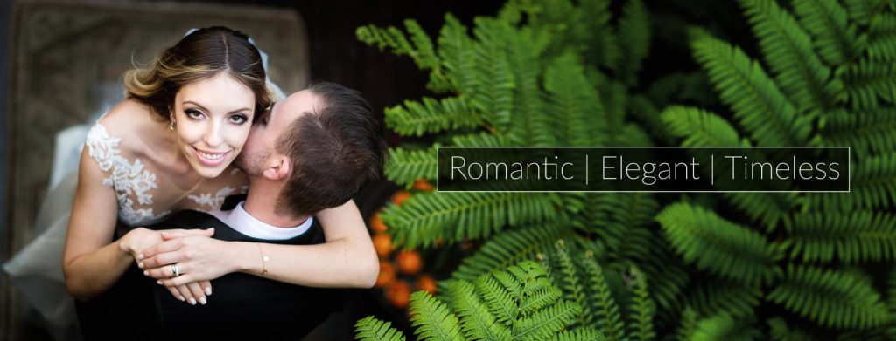
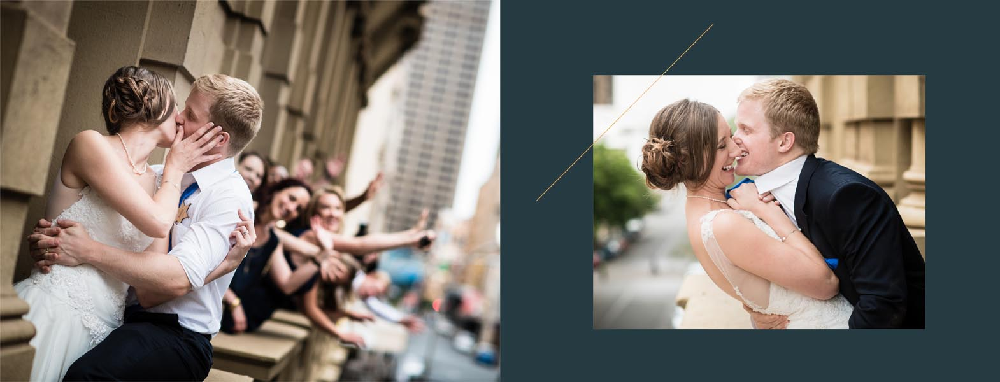
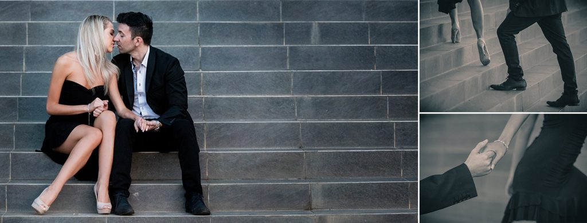
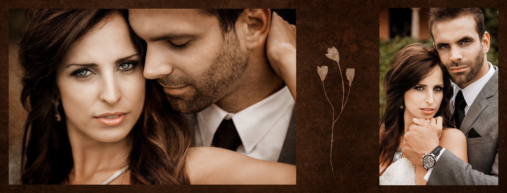
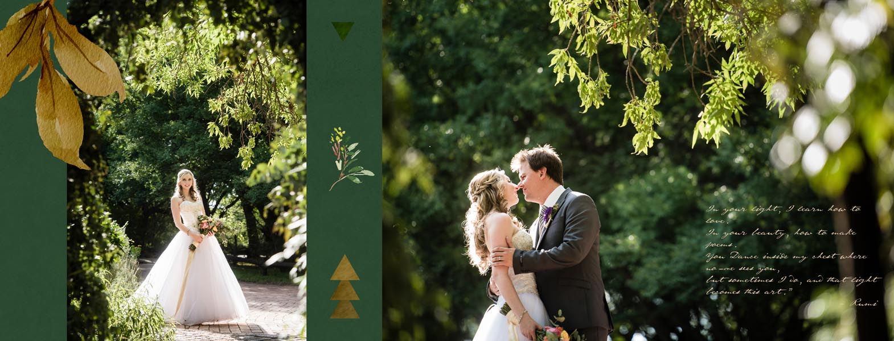
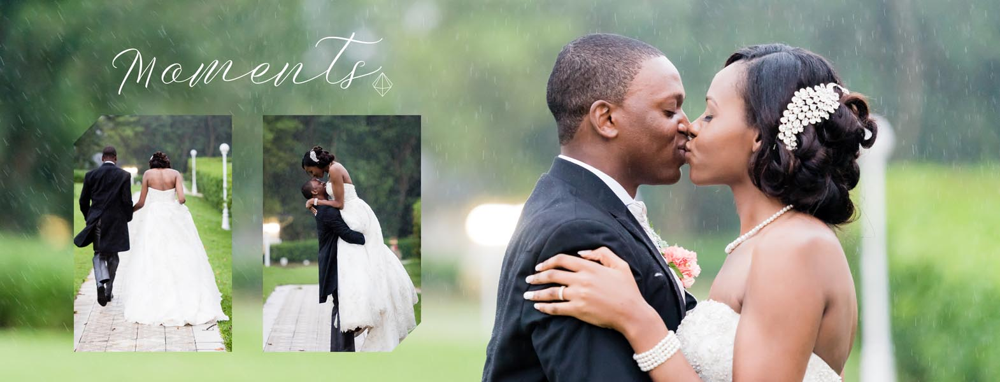
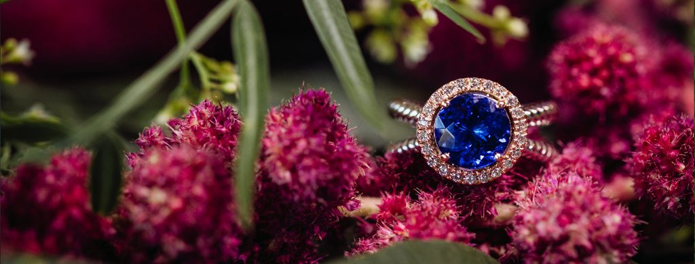

<?xml version="1.0" encoding="UTF-8"?><rss version="2.0"
	xmlns:content="http://purl.org/rss/1.0/modules/content/"
	xmlns:wfw="http://wellformedweb.org/CommentAPI/"
	xmlns:dc="http://purl.org/dc/elements/1.1/"
	xmlns:atom="http://www.w3.org/2005/Atom"
	xmlns:sy="http://purl.org/rss/1.0/modules/syndication/"
	xmlns:slash="http://purl.org/rss/1.0/modules/slash/"
	
	xmlns:georss="http://www.georss.org/georss"
	xmlns:geo="http://www.w3.org/2003/01/geo/wgs84_pos#"
	>

<channel>
	<title>Warren James Photography</title>
	<atom:link href="http://warrenjames.co.za/feed/" rel="self" type="application/rss+xml" />
	<link>http://warrenjames.co.za</link>
	<description>Wedding Photographers Gauteng and Pretoria</description>
	<lastBuildDate>Wed, 27 Nov 2019 19:08:18 +0200</lastBuildDate>
	<language>en-ZA</language>
	<sy:updatePeriod>
	hourly	</sy:updatePeriod>
	<sy:updateFrequency>
	1	</sy:updateFrequency>
	<generator>https://wordpress.org/?v=5.3</generator>

<image>
	<url>http://warrenjames.co.za/wp-content/uploads/2017/03/cropped-Warren-James-Logo-W-Square900px-32x32.png</url>
	<title>Warren James Photography</title>
	<link>http://warrenjames.co.za</link>
	<width>32</width>
	<height>32</height>
</image> 
	<item>
		<title>5 Most common FAQ&#8217;s</title>
		<link>http://warrenjames.co.za/5-ways-confidently-unique-wedding-day/</link>
				<pubDate>Sun, 11 Mar 2018 16:57:50 +0000</pubDate>
		<dc:creator><![CDATA[Warren James]]></dc:creator>
				<category><![CDATA[Highlighted Posts]]></category>
		<category><![CDATA[Uncategorized]]></category>

		<guid isPermaLink="false">http://warrenjames.co.za/?p=12182</guid>
				<description><![CDATA[<p>The post <a rel="nofollow" href="http://warrenjames.co.za/5-ways-confidently-unique-wedding-day/">5 Most common FAQ&#8217;s</a> appeared first on <a rel="nofollow" href="http://warrenjames.co.za">Warren James Photography</a>.</p>
]]></description>
								<content:encoded><![CDATA[<p><div class="et_pb_section et_pb_section_0 et_section_regular" data-padding="0px|||">
				
				
				
				
					<div class="et_pb_row et_pb_row_0 et_pb_row_fullwidth">
				<div class="et_pb_column et_pb_column_4_4 et_pb_column_0  et_pb_css_mix_blend_mode_passthrough et-last-child">
				
				
				<div class="et_pb_module et_pb_image et_pb_image_0">
				
				
				<span class="et_pb_image_wrap "></span>
			</div>
			</div> <!-- .et_pb_column -->
				
				
			</div> <!-- .et_pb_row --><div class="et_pb_row et_pb_row_1">
				<div class="et_pb_column et_pb_column_4_4 et_pb_column_1  et_pb_css_mix_blend_mode_passthrough et-last-child">
				
				
				<div class="et_pb_module et_pb_text et_pb_text_0 et_animated  et_pb_text_align_left et_pb_bg_layout_light">
				
				
				<div class="et_pb_text_inner"><h1 style="text-align: center;">5 F.A.Q&#8217;s to help your wedding day be confidently unique.</h1></div>
			</div> <!-- .et_pb_text --><div class="et_pb_module et_pb_divider et_pb_divider_0 et_pb_divider_position_ et_pb_space"><div class="et_pb_divider_internal"></div></div><div class="et_pb_module et_pb_text et_pb_text_1 et_animated  et_pb_text_align_left et_pb_bg_layout_light">
				
				
				<div class="et_pb_text_inner"><p><em><strong>So, you’ve gone Facebook official and announced your engagement to the world!</strong></em> Suddenly everyone in your network is congratulating you, and you’re already starting to wonder who of them must be invited to your big day. And this is only the start of everything you have to consider as you begin the big countdown.</p>
<p></p>
<blockquote>
<p>Aside from being one of the best days of your life, your wedding will also be one of the most emotional</p>
</blockquote>
<p>If you aren’t a natural-born event planner, all the organisation and project management can be overwhelming. Everything you feel seems heightened; if you’re happy it feels more like delight… and equally so, if something upsets you it feels like the end of the world. This is why you, as the bride-to-be, need to consider your “wedding squad” very carefully.  Everyone that you choose as wedding suppliers (and yes, that includes your retinue) must be committed to one thing above all else: your peace-of-mind, not only on the day but during the lead-up too.  Not to cause you any added anxiety, but this day really is about you (and your Prince Charming, of course), so it’s very important that you feel comfortable with your team of trusted advisors. Someone who has built his entire business around this understanding, is the renowned and highly sought-after wedding photographer, Warren James.</p>
<p><span style="font-size: large;"><em><span style="color: #ff6600; font-family: Lato; font-weight: normal;"><strong>Keep reading for an opportunity to suss out one of the industry’s top wedding photographers and win a free engagement shoot. </strong></span></em></span></p>
<p></p>
<blockquote>
<p>Warren and his team are recognised and respected for their deep connections that they forge with their brides, and clients in general.</p>
</blockquote>
<p>From boudoir shoots to wedding days, the whole experience is always defined by a relaxed sense of fun and familiarity, with phenomenal photography as a natural outcome.  This is the very essence of Warren James. “In the years of my career as a professional photographer, I’ve seen amazing things through my lens and heard many questions that almost every bride asks,” explains Warren.  In this series of <strong>#WeddingWisdom</strong> posts, Warren will be sharing his rare observations from behind-the-scenes – or in his case, behind-the-lens. “Because I’m intent on being my bride’s right-hand man, no disrespect to the groom, my mission is to assure you every step of the way, so let’s start with five of the most frequently asked questions.”</p>
<h2>1. I’M NOT A MODEL AND I’M WORRIED THAT MY AWKWARDNESS WILL RUIN THE PHOTOS</h2>
<p></p>
<p>Almost all the couples I work with have some level of phobia being infront of the camera. To some it is only a slight concern that their hair and outfit looks great, to others, they would rather be in the dentist chair than being &#8220;posed&#8221; infront of a camera lens. <span style="text-decoration: underline;"><strong>I make it my mission to be sure that every person I photograph feels relaxed and confident, while having fun taking photo&#8217;s with me. </strong></span></p>
<p>I see my job as being the narrator and visual story-teller of your wedding day. I make it a priority to grok what makes my your story unique and also what makes you feel confident and relaxed while we make pictures together. I am intent on capturing individual personalities as much as I am on capturing the perfect shot. It’s all about making my clients feel confident &amp; unique, and then capturing it all on camera.</p>
<p>You’ll be amazed by the magic that naturally happens when my clients are relaxed and not only looking, but also <em>feeling</em> like they’re living happily ever after! The rest is up to me, so let’s tell your story together.</p>
<h2>2. SO NOW I’M ENGAGED, WHAT’S THE NEXT STEP?</h2>
<p></p>
<blockquote>
<p>Pre-wedding shoot is all about story-telling, fantasy and having lots of fun!</p>
</blockquote>
<p>As far as photography is concerned, there are several photographic milestones leading up to your wedding day. First there’s the fun and exciting pre-wedding shoot which could possibly be your first professional photo shoot together as a couple. Now that it’s official you’ll want to show off your love (and your glittering ring) to the world. This is also your opportunity for you as a couple to form a relationship with your photographer and start to get more comfortable interacting with each other. This insight will help your photographer to look out for and capture those unique and intimate moments on your wedding day.</p>
<p> </p>
<p>Typically the pre-wedding shoot captures where you are in your lives as a couple. First you need to decide which setting will be the perfect backdrop for your unique story. Maybe it’s on the university campus where you met, or in the restaurant where you had your first date, or even in an amusement park because fun is what you’re all about as a couple. <strong>One of the biggest objectives of this shoot is for your photographer to reassure you, that he can make you feel comfortable in any environment so that you’re not confronted with any awkwardness on the day.</strong> Your wedding day shoot is the culmination of all this – the final opportunity to capture every moment authentically as it happens.  I like to look out for the moments between the moments. Your wedding will feel like it’s gone in blur, so it’s your photographer’s job to capture every step of the journey.</p>
<h2>3. DO YOU HAVE A SIGNATURE STYLE?</h2>
<p> Yes, I fall into the category of a “romantic” photographer – just as well I decided to become a wedding photographer, hey? But seriously though, my photographic instinct is highly technical and I see opportunities and angles that other photographers generally don’t see.  The composition, lighting, and acute attention to detail are all signatures of my fairy-tale style and are evident in every shot and every wedding album.</p>
<h2>4. CAN I BRING YOU REFERENCE PICS OF PARTICULAR SHOTS I WANT INCLUDED?</h2>
<p> Of course, by all means, but know that I’ll always push for a unique take on the concept. My wedding photography is bespoke and distinctly devoid of cliched shots. After all, that’s why my brides choose me as their photographer.  I will always listen to your ideas though, and then interpret them into a final product that is unmistakably and confidently unique.</p>
<h2>5. WHAT HAPPENS IF IT POURS ON THE DAY?</h2>
<p> I know that it’s supposed to be a sign of good luck, but having the rain pour down just as you make your big entrance hardly feels lucky! But it’s really not as bad as it seems.  The rain often provides the opportunity for some pretty amazing shots.  By back lighting the rain drops and looking for reflections in puddles I’m able to capture a different kind of romance that only adds to the final product. I do recommend, however, that my brides discuss an indoor/rain plan option with the venue before booking it.  The season you choose to get married in and time of the day will also play a big role in the likelihood of rain. Next in our series of Warren’s #WeddingWisdom we’ll be featuring the services of other wedding suppliers.  For instance, what are the top 5 things you need to know about choosing the dress and the flowers and the cake?  Because of his unique perspective from behind the lens, Warren is able to offer an objective and valuable opinion on all things wedding as a trusted supplier and friend.</p>
<p><div id="attachment_12225" style="width: 1034px" class="wp-caption aligncenter"><p id="caption-attachment-12225" class="wp-caption-text">P.S. Did we mention, we are crazy about details?</p></div></div>
			</div> <!-- .et_pb_text --><div class="et_pb_module et_pb_text et_pb_text_2 et_animated  et_pb_text_align_left et_pb_bg_layout_light">
				
				
				<div class="et_pb_text_inner"><span style="color: #006882;">Take the first step of your wedding journey with Warren James photography by clicking on the link below. <strong>Submit any of your wedding photography questions and the best one, as judged by Warren James, will win a free engagement shoot to the value of R3&nbsp;500.</strong></span></div>
			</div> <!-- .et_pb_text -->
			</div> <!-- .et_pb_column -->
				
				
			</div> <!-- .et_pb_row -->
				
				
			</div> <!-- .et_pb_section --><div class="et_pb_section et_pb_section_1 et_section_regular">
				
				
				
				
					<div class="et_pb_row et_pb_row_2">
				<div class="et_pb_column et_pb_column_1_2 et_pb_column_2  et_pb_css_mix_blend_mode_passthrough">
				
				
				
			<div id="et_pb_contact_form_0" class="et_pb_module et_pb_contact_form_0 et_pb_contact_form_container clearfix" data-form_unique_num="0">
				
				
				<h1 class="et_pb_contact_main_title">Enter to win</h1>
				<div class="et-pb-contact-message"></div>
				
				<div class="et_pb_contact">
					<form class="et_pb_contact_form clearfix" method="post" action="http://warrenjames.co.za/5-ways-confidently-unique-wedding-day/">
						<p class="et_pb_contact_field et_pb_contact_field_0 et_pb_contact_field_half" data-id="name" data-type="input">
				
				
				<label for="et_pb_contact_name_0" class="et_pb_contact_form_label">Name</label>
				<input type="text" id="et_pb_contact_name_0" class="input" value="" name="et_pb_contact_name_0" data-required_mark="required" data-field_type="input" data-original_id="name" placeholder="Name">
			</p><p class="et_pb_contact_field et_pb_contact_field_1 et_pb_contact_field_half et_pb_contact_field_last" data-id="email" data-type="email">
				
				
				<label for="et_pb_contact_email_0" class="et_pb_contact_form_label">Email Address</label>
				<input type="text" id="et_pb_contact_email_0" class="input" value="" name="et_pb_contact_email_0" data-required_mark="required" data-field_type="email" data-original_id="email" placeholder="Email Address">
			</p><p class="et_pb_contact_field et_pb_contact_field_2 et_pb_contact_field_last" data-id="message" data-type="text">
				
				
				<label for="et_pb_contact_message_0" class="et_pb_contact_form_label">Message</label>
				<textarea name="et_pb_contact_message_0" id="et_pb_contact_message_0" class="et_pb_contact_message input" data-required_mark="required" data-field_type="text" data-original_id="message" placeholder="Message"></textarea>
			</p><p class="et_pb_contact_field et_pb_contact_field_3 et_pb_contact_field_last" data-id="contact_number" data-type="input">
				
				
				<label for="et_pb_contact_contact_number_0" class="et_pb_contact_form_label">Contact Number</label>
				<input type="text" id="et_pb_contact_contact_number_0" class="input" value="" name="et_pb_contact_contact_number_0" data-required_mark="required" data-field_type="input" data-original_id="contact_number" placeholder="Contact Number" pattern="[0-9\s-]{10,12}" title="Only numbers allowed.Minimum length: 10 characters. Maximum length: 12 characters." maxlength="12">
			</p>
						<input type="hidden" value="et_contact_proccess" name="et_pb_contactform_submit_0"/>
						<div class="et_contact_bottom_container">
							
			<div class="et_pb_contact_right">
				<p class="clearfix">
					<span class="et_pb_contact_captcha_question">2 + 9</span> = <input type="text" size="2" class="input et_pb_contact_captcha" data-first_digit="2" data-second_digit="9" value="" name="et_pb_contact_captcha_0" data-required_mark="required" autocomplete="disabled">
				</p>
			</div> <!-- .et_pb_contact_right -->
							<button type="submit" name="et_builder_submit_button" class="et_pb_contact_submit et_pb_button">Submit</button>
						</div>
						<input type="hidden" id="_wpnonce-et-pb-contact-form-submitted-0" name="_wpnonce-et-pb-contact-form-submitted-0" value="da56981b6c" /><input type="hidden" name="_wp_http_referer" value="/feed/" />
					</form>
				</div> <!-- .et_pb_contact -->
			</div> <!-- .et_pb_contact_form_container -->
			
			</div> <!-- .et_pb_column --><div class="et_pb_column et_pb_column_1_2 et_pb_column_3  et_pb_css_mix_blend_mode_passthrough et-last-child">
				
				
				<div class="et_pb_module et_pb_gallery et_pb_gallery_0  et_pb_bg_layout_light et_pb_slider et_pb_gallery_fullwidth">
				<div class="et_pb_gallery_items et_post_gallery clearfix" data-per_page="4"><div class="et_pb_gallery_item et_pb_bg_layout_light">
				<div class='et_pb_gallery_image landscape'>
					<a href="http://warrenjames.co.za/wp-content/uploads/2017/08/17May29_150120-Edit.jpg" title="17May29_150120-Edit">
					
					<span class="et_overlay"></span>
				</a>
				</div></div><div class="et_pb_gallery_item et_pb_bg_layout_light">
				<div class='et_pb_gallery_image landscape'>
					<a href="http://warrenjames.co.za/wp-content/uploads/2017/08/17Mar20_152828-Pano.jpg" title="17Mar20_152828-Pano">
					
					<span class="et_overlay"></span>
				</a>
				</div></div><div class="et_pb_gallery_item et_pb_bg_layout_light">
				<div class='et_pb_gallery_image landscape'>
					<a href="http://warrenjames.co.za/wp-content/uploads/2017/08/17May29_121623.jpg" title="17May29_121623">
					
					<span class="et_overlay"></span>
				</a>
				</div></div><div class="et_pb_gallery_item et_pb_bg_layout_light">
				<div class='et_pb_gallery_image landscape'>
					<a href="http://warrenjames.co.za/wp-content/uploads/2017/08/17Mar20_183824.jpg" title="17Mar20_183824">
					
					<span class="et_overlay"></span>
				</a>
				</div></div><div class="et_pb_gallery_item et_pb_bg_layout_light">
				<div class='et_pb_gallery_image landscape'>
					<a href="http://warrenjames.co.za/wp-content/uploads/2017/08/17Mar20_174030.jpg" title="17Mar20_174030">
					
					<span class="et_overlay"></span>
				</a>
				</div></div><div class="et_pb_gallery_item et_pb_bg_layout_light">
				<div class='et_pb_gallery_image landscape'>
					<a href="http://warrenjames.co.za/wp-content/uploads/2017/08/15Sep21_060211.jpg" title="15Sep21_060211">
					
					<span class="et_overlay"></span>
				</a>
				</div></div><div class="et_pb_gallery_item et_pb_bg_layout_light">
				<div class='et_pb_gallery_image landscape'>
					<a href="http://warrenjames.co.za/wp-content/uploads/2017/08/17Apr30_080744.jpg" title="17Apr30_080744">
					
					<span class="et_overlay"></span>
				</a>
				</div></div></div><!-- .et_pb_gallery_items --></div><!-- .et_pb_gallery -->
			</div> <!-- .et_pb_column -->
				
				
			</div> <!-- .et_pb_row -->
				
				
			</div> <!-- .et_pb_section --><div class="et_pb_section et_pb_section_3 et_pb_with_background et_section_regular">
				
				
				
				
					<div class="et_pb_row et_pb_row_3 et_animated">
				<div class="et_pb_column et_pb_column_1_2 et_pb_column_4  et_pb_css_mix_blend_mode_passthrough">
				
				
				<div class="et_pb_module et_pb_testimonial et_pb_testimonial_0 clearfix  et_pb_text_align_left et_pb_bg_layout_dark et_pb_testimonial_no_image">
				
				
				<div style="background-image:url(http://warrenjames.co.za/wp-content/uploads/2017/07/Mwnasa.png)" class="et_pb_testimonial_portrait"></div>
				<div class="et_pb_testimonial_description">
					<div class="et_pb_testimonial_description_inner">
					<p>“I can’t tell you how many people have complimented us on the fabulous photography not only from our wedding but also from our engagement shoot.</p>
<p>We were not too sure if Warren had experience with “Black African” weddings, but all of our doubts were dispelled once we started working together.</p>
<p>It was amazing to watch someone with such an artistic eye at work, capturing our day so effortlessly. Not only were the pictures stunning, but you were such a lovely presence to have around, which I feel allowed you to catch people at their best, as they were always happy to see you.</p>
<p>We would recommend you to anyone!”</p>
					<span class="et_pb_testimonial_author">Mwansa &amp; Peter</span>
					<p class="et_pb_testimonial_meta"></p>
					</div> <!-- .et_pb_testimonial_description_inner -->
				</div> <!-- .et_pb_testimonial_description -->
			</div> <!-- .et_pb_testimonial --><div class="et_pb_module et_pb_testimonial et_pb_testimonial_1 clearfix  et_pb_text_align_left et_pb_bg_layout_dark et_pb_testimonial_no_image">
				
				
				<div style="background-image:url(http://warrenjames.co.za/wp-content/uploads/2016/11/Michaela.png)" class="et_pb_testimonial_portrait"></div>
				<div class="et_pb_testimonial_description">
					<div class="et_pb_testimonial_description_inner">
					<p>“Hello Sharon and Warren</p>
<p>Thank you so much for the link to our photos. We love them all. This is really way better than we ever imagined. We are so excited and so so happy”</p>
					<span class="et_pb_testimonial_author">Rob &amp; Michaela</span>
					<p class="et_pb_testimonial_meta"></p>
					</div> <!-- .et_pb_testimonial_description_inner -->
				</div> <!-- .et_pb_testimonial_description -->
			</div> <!-- .et_pb_testimonial --><div class="et_pb_module et_pb_testimonial et_pb_testimonial_2 clearfix  et_pb_text_align_left et_pb_bg_layout_dark et_pb_testimonial_no_image">
				
				
				<div style="background-image:url(http://warrenjames.co.za/wp-content/uploads/2017/07/Tammy.png)" class="et_pb_testimonial_portrait"></div>
				<div class="et_pb_testimonial_description">
					<div class="et_pb_testimonial_description_inner">
					<p>“Hi warren,</p>
<p>I would like to say a Huge THANK YOU to you &amp; Sharon for capturing our day!</p>
<p>You were so professional, personable and completely relaxed and fun which added to our special day!</p>
<p>The moments you captured I will cherish forever and absolutely cannot stop going through the photos you have sent through! Thank you so much!</p>
<p>You are so talented and will recommend to everyone I know!”</p>
					<span class="et_pb_testimonial_author">Tammy &amp; John</span>
					<p class="et_pb_testimonial_meta"></p>
					</div> <!-- .et_pb_testimonial_description_inner -->
				</div> <!-- .et_pb_testimonial_description -->
			</div> <!-- .et_pb_testimonial --><div class="et_pb_module et_pb_testimonial et_pb_testimonial_3 clearfix  et_pb_text_align_left et_pb_bg_layout_dark et_pb_testimonial_no_image">
				
				
				<div style="background-image:url(http://warrenjames.co.za/wp-content/uploads/2016/11/Astrid.png)" class="et_pb_testimonial_portrait"></div>
				<div class="et_pb_testimonial_description">
					<div class="et_pb_testimonial_description_inner">
					<p>“Hey Warren,</p>
<p>We are exceptionally happy with your work! Your team fit in perfectly and made us all feel very comfortable throughout the chaos of getting everything ready! Thank you very much, you guys were awesome! We loved having you there!</p>
<p>Astrid &amp; Rolf”</p>
					<span class="et_pb_testimonial_author">Astrid &amp; Rolf</span>
					<p class="et_pb_testimonial_meta"></p>
					</div> <!-- .et_pb_testimonial_description_inner -->
				</div> <!-- .et_pb_testimonial_description -->
			</div> <!-- .et_pb_testimonial --><div class="et_pb_module et_pb_testimonial et_pb_testimonial_4 clearfix  et_pb_text_align_left et_pb_bg_layout_dark et_pb_testimonial_no_image">
				
				
				<div style="background-image:url(http://warrenjames.co.za/wp-content/uploads/2017/07/Neo.png)" class="et_pb_testimonial_portrait"></div>
				<div class="et_pb_testimonial_description">
					<div class="et_pb_testimonial_description_inner">
					<p>“What a talented photographer! We couldn’t have been more blessed with you guys as our photographers.</p>
<p>You guys are the best and we are truly so thankful for our photos and the experience we had with you.</p>
<p>You have made our hearts melt with our pictures. I am so obsessed with them.There’s not a day that goes by that l don’t look at them.</p>
<p>Our friends and family are constantly complimenting our wedding photos and how beautiful they are.</p>
<p>Words are not enough&nbsp;to say “Thank you” but we want you to know that our wedding photos are the most important part of our home.</p>
<p>We wish you guys every bit of success.”</p>
					<span class="et_pb_testimonial_author">Neo &amp; Daniel</span>
					<p class="et_pb_testimonial_meta"></p>
					</div> <!-- .et_pb_testimonial_description_inner -->
				</div> <!-- .et_pb_testimonial_description -->
			</div> <!-- .et_pb_testimonial -->
			</div> <!-- .et_pb_column --><div class="et_pb_column et_pb_column_1_2 et_pb_column_5  et_pb_css_mix_blend_mode_passthrough et-last-child">
				
				
				<div class="et_pb_module et_pb_testimonial et_pb_testimonial_5 clearfix  et_pb_text_align_left et_pb_bg_layout_dark et_pb_testimonial_no_image">
				
				
				<div style="background-image:url(http://warrenjames.co.za/wp-content/uploads/2017/07/Yael.png)" class="et_pb_testimonial_portrait"></div>
				<div class="et_pb_testimonial_description">
					<div class="et_pb_testimonial_description_inner">
					<p>“<span style="font-size: 11px;">Warren, working with you and your team was such an easy going experience for us! We loved having you all be a part of our day and making us feel so comfortable throughout this experience.</span></p>
<p><span style="font-size: 11px;"> Taking all of these photos on our wedding day and the day after shoot did not feel like an effort at all, but was rather a lot of fun and your guidance, great sense of humour and constant smile made it way easier than we ever could have imagined. </span></p>
<p><span style="font-size: 11px;">Thanks for capturing some unforgettable moments that we will always love and cherish!!</span></p>
<p><span style="font-size: 11px;">To all those looking for a photographer – Warren and his team come HIGHLY recommended from the Rosen’s </span>”</p>
					<span class="et_pb_testimonial_author">Marc &amp; Yael</span>
					<p class="et_pb_testimonial_meta"></p>
					</div> <!-- .et_pb_testimonial_description_inner -->
				</div> <!-- .et_pb_testimonial_description -->
			</div> <!-- .et_pb_testimonial --><div class="et_pb_module et_pb_testimonial et_pb_testimonial_6 clearfix  et_pb_text_align_left et_pb_bg_layout_dark et_pb_testimonial_no_image">
				
				
				<div style="background-image:url(http://warrenjames.co.za/wp-content/uploads/2016/11/Hinor.png)" class="et_pb_testimonial_portrait"></div>
				<div class="et_pb_testimonial_description">
					<div class="et_pb_testimonial_description_inner">
					<p>“Wow these are incredible Warren!!!</p>
<p>Thank you so so much. Jonty and I love them.</p>
<p>You were honestly such a pleasure and breath of the fresh air to work with. You calmed us down and were so clear with all your directions and thoughtfulness.</p>
<p>A truly excellent professional with amazing skill!! We love your work and hope the Jewish community snatches you up based on your pics and those to come!</p>
<p>You made our day such a pleasure for us</p>
					<span class="et_pb_testimonial_author">Jonty &amp; Hinor</span>
					<p class="et_pb_testimonial_meta"></p>
					</div> <!-- .et_pb_testimonial_description_inner -->
				</div> <!-- .et_pb_testimonial_description -->
			</div> <!-- .et_pb_testimonial --><div class="et_pb_module et_pb_testimonial et_pb_testimonial_7 clearfix  et_pb_text_align_left et_pb_bg_layout_dark et_pb_testimonial_no_image">
				
				
				<div style="background-image:url(http://warrenjames.co.za/wp-content/uploads/2017/07/Desiree-1.png)" class="et_pb_testimonial_portrait"></div>
				<div class="et_pb_testimonial_description">
					<div class="et_pb_testimonial_description_inner">
					<p>“My husband and I experienced Warren James Photography as an artist-at-work combined with a feeling of comfort.</p>
<p>Your wedding day should be both whimsical and comfortable, in order to truly enjoy the experience. Warren and his team makes this possible."</p>
<p>I was extremely satisfied that you really listened to what I liked and disliked, and worked with that.</p>
<p>I am proud to say that my wedding photography was done by you"</p>
					<span class="et_pb_testimonial_author">Desiree &amp; Jaco</span>
					<p class="et_pb_testimonial_meta"></p>
					</div> <!-- .et_pb_testimonial_description_inner -->
				</div> <!-- .et_pb_testimonial_description -->
			</div> <!-- .et_pb_testimonial --><div class="et_pb_module et_pb_testimonial et_pb_testimonial_8 clearfix  et_pb_text_align_left et_pb_bg_layout_dark et_pb_testimonial_no_image">
				
				
				<div style="background-image:url(http://warrenjames.co.za/wp-content/uploads/2016/11/Roumandi.png)" class="et_pb_testimonial_portrait"></div>
				<div class="et_pb_testimonial_description">
					<div class="et_pb_testimonial_description_inner">
					<p>“Dear Warren James and team</p>
<p>Thank you for the most beautiful photos you and your assistant created for us, capturing our most memorable moments to keep with us forever.</p>
<p>You have a wonderful gift and I will recommend you to everyone.</p>
<p>Warmest Regards”</p>
					<span class="et_pb_testimonial_author">Ryno &amp; Rouxmandi</span>
					<p class="et_pb_testimonial_meta"></p>
					</div> <!-- .et_pb_testimonial_description_inner -->
				</div> <!-- .et_pb_testimonial_description -->
			</div> <!-- .et_pb_testimonial -->
			</div> <!-- .et_pb_column -->
				
				
			</div> <!-- .et_pb_row -->
				
				
			</div> <!-- .et_pb_section --></p>
<p>The post <a rel="nofollow" href="http://warrenjames.co.za/5-ways-confidently-unique-wedding-day/">5 Most common FAQ&#8217;s</a> appeared first on <a rel="nofollow" href="http://warrenjames.co.za">Warren James Photography</a>.</p>
]]></content:encoded>
										</item>
		<item>
		<title>7 tips to help you find your perfect wedding photographer</title>
		<link>http://warrenjames.co.za/find-your-perfect-wedding-photographer/</link>
				<pubDate>Mon, 22 Jan 2018 12:16:53 +0000</pubDate>
		<dc:creator><![CDATA[Warren James]]></dc:creator>
				<category><![CDATA[Uncategorized]]></category>

		<guid isPermaLink="false">http://warrenjames.co.za/?p=12027</guid>
				<description><![CDATA[<p>The post <a rel="nofollow" href="http://warrenjames.co.za/find-your-perfect-wedding-photographer/">7 tips to help you find your perfect wedding photographer</a> appeared first on <a rel="nofollow" href="http://warrenjames.co.za">Warren James Photography</a>.</p>
]]></description>
								<content:encoded><![CDATA[<p><div class="et_pb_section et_pb_section_4 et_section_regular">
				
				
				
				
					<div class="et_pb_row et_pb_row_4 et_pb_row_fullwidth et_animated et_pb_section_parallax">
				<div class="et_pb_column et_pb_column_4_4 et_pb_column_6  et_pb_css_mix_blend_mode_passthrough et-last-child">
				
				
				<div class="et_pb_module et_pb_text et_pb_text_3 et_animated  et_pb_text_align_center et_pb_bg_layout_light">
				
				
				<div class="et_pb_text_inner"><h1>7 Authentic tips to finding your perfect wedding photogarpher</h1></div>
			</div> <!-- .et_pb_text -->
			</div> <!-- .et_pb_column -->
				<span class="et_parallax_bg_wrap"><span
						class="et_parallax_bg et_pb_parallax_css"
						style="background-image: url(http://warrenjames.co.za/wp-content/uploads/2016/04/WJP3-1.jpg);"
					></span></span>
				
			</div> <!-- .et_pb_row -->
				
				
			</div> <!-- .et_pb_section --><div class="et_pb_section et_pb_section_5 et_section_regular">
				
				
				
				
					<div class="et_pb_row et_pb_row_5 et_pb_row_fullwidth">
				<div class="et_pb_column et_pb_column_4_4 et_pb_column_7  et_pb_css_mix_blend_mode_passthrough et-last-child">
				
				
				<div class="et_pb_module et_pb_text et_pb_text_4 et_animated  et_pb_text_align_left et_pb_bg_layout_light">
				
				
				<div class="et_pb_text_inner"> [<a href="http://warrenjames.co.za/find-your-perfect-wedding-photographer/">See image gallery at warrenjames.co.za</a>] </p>
<p>&nbsp; </div>
			</div> <!-- .et_pb_text -->
			</div> <!-- .et_pb_column -->
				
				
			</div> <!-- .et_pb_row -->
				
				
			</div> <!-- .et_pb_section --><div class="et_pb_section et_pb_section_6 et_section_regular">
				
				
				
				
					<div class="et_pb_row et_pb_row_6">
				<div class="et_pb_column et_pb_column_4_4 et_pb_column_8  et_pb_css_mix_blend_mode_passthrough et-last-child">
				
				
				<div class="et_pb_module et_pb_text et_pb_text_5 et_animated  et_pb_text_align_left et_pb_bg_layout_light">
				
				
				<div class="et_pb_text_inner"><h3>What we want to help with:</h3>
<p>After photographing and dealing with hundreds of brides, I wanted to put together the best 7 tips for you on finding your perfect wedding photographer… from a photographer’s perspective! Ill cover things like, understanding what makes you like certain images more than others. How to short-list your candidate photographers, gain insight into pricing and managing your budget and more. Hope you find these tips useful. Feel free to contact us if you have any questions about your unique needs.</p>
<p>Warmest regards,<br />
Warren and the team.</p>
<h3>1) Find your photo mojo.</h3>
<p>Understand what makes you feel warm and fuzzy inside? Here is 7 things that you might be loving about a photographers images without being able to put your finger on it. Identify what is on top of your list, that will allow you to identify and single out the photographers that resonate best with you.</p>
<ul>
<li><strong>Moment shots</strong><strong>.</strong>
<ul>
<li><em>If moment shots (documentary style images that capture the moment) are on the top of your list, then the ability to make you, and your guests, feel at ease is a skill that your photographer should be good at. When you are comfortable with someone being around you, you will act naturally. This allows moments to happen naturally, without feeling conscious of the people around you.</em></li>
</ul>
</li>
<li><strong>Beautiful lighting &amp; atmosphere.</strong>
<ul>
<li><em>Any good photographer will tell you lighting is at least 80 percent of a beautiful&nbsp;image. Your wedding photographer should be able to use and enhance natural light beautifully. More than this, he\she should also be able to use flash photography in a natural looking way. This is especially important when lighting conditions aren’t great (and believe me, many times they are not!). Ask your wedding photographer about his\her ability and approach to both lighting methods.</em></li>
</ul>
</li>
<li><strong><strong>Attention to detail</strong></strong>
<div id="attachment_12065" style="width: 366px" class="wp-caption alignright"><p id="caption-attachment-12065" class="wp-caption-text">Good posing should look natural and relaxed</p></div>
<ul>
<li><em>Crazy about the little things? You will be looking for a photographer with the same attention to detail. Ask your photographer which details he focuses on and keep an eye out for details in his\her portfolio’s.</em></li>
</ul>
</li>
<li><strong>Storytelling</strong>
<ul>
<li><em>Weddings are all about story. You might be looking at an image and wondering “what made that person laugh like that?” or “What is the bride looking at?” These are all signs that the wedding photographer is telling a good story with their images.</em> &nbsp;</li>
</ul>
</li>
<li><strong><strong>Fantastic posing</strong></strong>
<ul>
<li><em>Great posing does not look awkward or forced, it looks natural and picture perfect&nbsp;</em></li>
</ul>
</li>
<li><strong>Stylistic approach</strong>
<ul>
<li>B<em>right and angelic, romantic, moody, fashionable, use of colours etc.</em></li>
</ul>
</li>
<li><strong>Visual intelligence </strong>
<ul>
<li><em>The photographer’s ability to interpret a scene in a unique and interesting way.</em>&nbsp;&nbsp;</li>
</ul>
</li>
</ul>
<h3>2) How to narrow your list down.</h3>
<p>Get organized early on. One of the first things you should do is open central spreadsheet \ file or folder to keep all your favorite photographers information handy.</p>
<p>Don’t mix your photographers information with all the other elements for your wedding (dress, décor, to-do’s etc). This will help you feel less overwhelmed and give you a clearer idea of what you are looking for.</p>
<p>In the beginning, get information about photographers who’s images move you emotionally. Don’t clutter you file up with anything else! Next go through their pricing and remove anyone who is below or above your photography budget (see the next point for more on this)</p>
<p>Once you feel you have 5-10 of your best candidates use our handy <a href="https://userfiles-02.tave.com/8cfb7308-918e-4eec-8b35-28c6255c375d/CheatsheetFindyourphotographer.pdf" target="_blank" rel="noopener">cheat sheet</a> to narrow your list down to the top 4.</p>
<h3>3) Compare apples with apples.</h3>
<p>Don’t take a wedding photographer who charges R8 000 – R18 000 and compare his \ her services and product with a photographer that charges 18 000 – R40 000.</p>
<p>There are very specific reasons why certain photographer charge what they charge. It’s easy to fall into the trap of “but photographer X is giving me the same for half the price”. Even though photographer X might have some pretty images on their website, It takes a lot more than that to consistently deliver amazing products. In fact, getting a portfolio of good work together is only half of what it takes to run a professional business &amp; keep clients happy year after year.&nbsp;There is a reason why photographer X is only charging half. Avoid unforeseen disappointment, decide on your budget then compare your favorite photographers who charge within that budget. As a general guideline you should budget 12% &#8211; 18% of your overall wedding budget for your photography.</p>
<h3>4) Speak to your favorite photographers about your budget.</h3>
<p>Don’t shy away from a photographer who you feel is perfect, just because they fall outside of your budget. Tell them what your budget is and ask if they can make any recommendations on how they might be able to accommodate you. If the photographer is not able to meet your needs, at the very least, they should be able to recommend someone they thing will be perfect for you. At least you know its coming from a credible source.</p>
<h3>5) Ask to see a full wedding – with a twist.</h3>
<p>The internet is full of advisers who say “ask to see a full wedding”. Although this is great advice, and your photographer should confidently be able to show you as many weddings as you would like to see. The problem with this advice is that it could lead you to make some incorrect assumptions if a photographer does not run a blog post about every wedding they shoot.</p>
<p>Here are a few reasons a photographer might not publish every wedding they shoot:</p>
<ul>
<li><em>Client privacy</em>. Many high-end photographers don’t want to give the impression that they are insensitive about their client’s privacy concerns.</li>
<li><em>Marketing and branding efforts</em>. It might not be conducive to the photographers branding efforts to A) Have a smartiebox collection of weddings ranging from forests to urban settings to elopements, first and second marriages etc or B) Consistently only put a certain type of weddings out their alienating all the other clients they could be servicing.</li>
<li><em>Publishing weddings on the web is time consuming</em>. It takes almost a full day to prepare a well thought out, and laid out, blog post about a wedding. Your photographer might want to spend that time giving their current clients better service and products (like writing articles like this J).</li>
<li><em>They don’t want to start something that they cannot maintain properly</em>. The worst thing about a blog is when there are up to 1 year gaps between posts. This might be because the photographer is in such high demand they do not get around to posting regularly. The impression that is created by a poorly maintained blog, unfortunately leaves you with the opposite thoughts.</li>
</ul>
<h3>6) Ask to see some albums.</h3>
<h3></h3>
<p>The photo-album is a true culmination of a wedding photographer’s skill. It will give you a good idea about the photographer’s ability to tell a story through images. It will also give you an honest viewpoint on the photography skills as well as editing and stylistic approach to a wedding day. Again, I advise you to talk to your photographer about this and hear what he\she has to say about it.</p>
<h3>7) Choose someone that you click with (pun intended).</h3>
<p>Pay attention to how a photographer presents themselves. From their online presence, right through to the first meeting &amp; product presentation. Remember, you are going to have this person alongside you during one of the most important days of your life… After all, they should make you smile </p>
<p>&nbsp;</div>
			</div> <!-- .et_pb_text -->
			</div> <!-- .et_pb_column -->
				
				
			</div> <!-- .et_pb_row -->
				
				
			</div> <!-- .et_pb_section --><div class="et_pb_section et_pb_section_7 et_pb_with_background et_section_regular">
				
				
				
				
					<div class="et_pb_row et_pb_row_7">
				<div class="et_pb_column et_pb_column_4_4 et_pb_column_9  et_pb_css_mix_blend_mode_passthrough et-last-child">
				
				
				<div class="et_pb_module et_pb_text et_pb_text_6 et_animated  et_pb_text_align_left et_pb_bg_layout_dark">
				
				
				<div class="et_pb_text_inner"><h2>Make an Enquiry</h2>
<p>If you feel that we could be your perfect photographers we would love to hear more about your wedding day. Fill out this form and we will contact you shortly:</p></div>
			</div> <!-- .et_pb_text --><div class="et_pb_module et_pb_text et_pb_text_7 et_animated  et_pb_text_align_left et_pb_bg_layout_dark">
				
				
				<div class="et_pb_text_inner">[contact-form-7]</div>
			</div> <!-- .et_pb_text -->
			</div> <!-- .et_pb_column -->
				
				
			</div> <!-- .et_pb_row -->
				
				
			</div> <!-- .et_pb_section --></p>
<p>The post <a rel="nofollow" href="http://warrenjames.co.za/find-your-perfect-wedding-photographer/">7 tips to help you find your perfect wedding photographer</a> appeared first on <a rel="nofollow" href="http://warrenjames.co.za">Warren James Photography</a>.</p>
]]></content:encoded>
										</item>
		<item>
		<title>Avianto Wedding</title>
		<link>http://warrenjames.co.za/avianto-wedding-venue-african-wedding-shot-on-fujifilm-gfx/</link>
				<comments>http://warrenjames.co.za/avianto-wedding-venue-african-wedding-shot-on-fujifilm-gfx/#comments</comments>
				<pubDate>Thu, 18 Jan 2018 20:38:59 +0000</pubDate>
		<dc:creator><![CDATA[Warren James]]></dc:creator>
				<category><![CDATA[Weddings]]></category>

		<guid isPermaLink="false">http://warrenjames.co.za/?p=11928</guid>
				<description><![CDATA[<p>The post <a rel="nofollow" href="http://warrenjames.co.za/avianto-wedding-venue-african-wedding-shot-on-fujifilm-gfx/">Avianto Wedding</a> appeared first on <a rel="nofollow" href="http://warrenjames.co.za">Warren James Photography</a>.</p>
]]></description>
								<content:encoded><![CDATA[<p><div class="et_pb_section et_pb_section_8 et_section_regular">
				
				
				
				
					<div class="et_pb_row et_pb_row_8 et_pb_row_fullwidth">
				<div class="et_pb_column et_pb_column_4_4 et_pb_column_10  et_pb_css_mix_blend_mode_passthrough et-last-child">
				
				
				<div class="et_pb_module et_pb_image et_pb_image_1 et_pb_image_sticky">
				
				
				<span class="et_pb_image_wrap "></span>
			</div>
			</div> <!-- .et_pb_column -->
				
				
			</div> <!-- .et_pb_row -->
				
				
			</div> <!-- .et_pb_section --><div class="et_pb_section et_pb_section_9 et_section_regular">
				
				
				
				
					<div class="et_pb_row et_pb_row_9">
				<div class="et_pb_column et_pb_column_4_4 et_pb_column_11  et_pb_css_mix_blend_mode_passthrough et-last-child">
				
				
				<div class="et_pb_module et_pb_post_title et_pb_post_title_0 et_pb_bg_layout_light  et_pb_text_align_center"   >
				
				
				
				<div class="et_pb_title_container">
					<h1 class="entry-title">Avianto Wedding</h1>
				</div>
				
			</div>
			</div> <!-- .et_pb_column -->
				
				
			</div> <!-- .et_pb_row --><div class="et_pb_row et_pb_row_10 et_pb_row_fullwidth et_pb_equal_columns et_pb_gutters1">
				<div class="et_pb_column et_pb_column_1_2 et_pb_column_12  et_pb_css_mix_blend_mode_passthrough">
				
				
				<div class="et_pb_module et_pb_divider_1 et_pb_space et_pb_divider_hidden"><div class="et_pb_divider_internal"></div></div>
			</div> <!-- .et_pb_column --><div class="et_pb_column et_pb_column_1_2 et_pb_column_13  et_pb_css_mix_blend_mode_passthrough et-last-child">
				
				
				<div class="et_pb_module et_pb_text et_pb_text_8 et_animated  et_pb_text_align_left et_pb_bg_layout_light">
				
				
				<div class="et_pb_text_inner"><div>&nbsp;</div>
<blockquote>
<h3>Avianto wedding venue was the perfect picturesque backdrop to this heartfelt celebration. As a wedding photographer, I enjoyed this commitment of love just as much as any of the splendid guests could have.</h3>
</blockquote></div>
			</div> <!-- .et_pb_text -->
			</div> <!-- .et_pb_column -->
				
				
			</div> <!-- .et_pb_row --><div class="et_pb_row et_pb_row_11 et_pb_row_fullwidth et_pb_equal_columns et_pb_gutters1">
				<div class="et_pb_column et_pb_column_1_2 et_pb_column_14  et_pb_css_mix_blend_mode_passthrough">
				
				
				<div class="et_pb_module et_pb_text et_pb_text_9 et_animated  et_pb_text_align_left et_pb_bg_layout_light">
				
				
				<div class="et_pb_text_inner"><h1>A wedding under blue african skies.</h1>
<p>As a wedding photographer I get to experience thousands of heart felt moments with my clients. Each one of them has a story behind it and I get to capture these stories, big and small, through the art of photography. This wedding, that was held at the beuatifully done up Avainto wedding venue, was no different.</p>
<p>Tsholo and Jenny celebrated the beautiful union of two families becoming one. From the first moment I experienced the close bonds that lay between this couple, their goreous kids and all the close friends and family that was present. Tsholo, his brother, and his mates, showed a long history of brotherly banter and love between them that only gets built over many years.</p>
<p>Jenny was completly swooned by all her beautiful flowergirls that were bubbly and excited to see this bride getting ready for her fairytale day.&nbsp;</p>
<p>The emotionally charged wedding cermony, was hosted under a perfect African blue sky. All the service providers did an amazing job and nobody present could have asked for anything more.&nbsp;</p>
<p>&nbsp;</p>
<h2>&nbsp;</h2></div>
			</div> <!-- .et_pb_text -->
			</div> <!-- .et_pb_column --><div class="et_pb_column et_pb_column_1_2 et_pb_column_15  et_pb_css_mix_blend_mode_passthrough et-last-child">
				
				
				<div class="et_pb_module et_pb_divider_2 et_pb_space et_pb_divider_hidden"><div class="et_pb_divider_internal"></div></div>
			</div> <!-- .et_pb_column -->
				
				
			</div> <!-- .et_pb_row -->
				
				
			</div> <!-- .et_pb_section --><div class="et_pb_section et_pb_section_10 et_section_regular">
				
				
				
				
					<div class="et_pb_row et_pb_row_12">
				<div class="et_pb_column et_pb_column_4_4 et_pb_column_16  et_pb_css_mix_blend_mode_passthrough et-last-child">
				
				
				<div class="et_pb_module et_pb_divider et_pb_divider_3 et_pb_divider_position_ et_pb_space"><div class="et_pb_divider_internal"></div></div><div class="et_pb_module et_pb_text et_pb_text_10 et_animated  et_pb_text_align_left et_pb_bg_layout_light">
				
				
				<div class="et_pb_text_inner"><h1 style="text-align: center;">Images from the day</h1></div>
			</div> <!-- .et_pb_text -->
			</div> <!-- .et_pb_column -->
				
				
			</div> <!-- .et_pb_row --><div class="et_pb_row et_pb_row_13">
				<div class="et_pb_column et_pb_column_4_4 et_pb_column_17  et_pb_css_mix_blend_mode_passthrough et-last-child">
				
				
				<div class="et_pb_module et_pb_text et_pb_text_11 et_animated  et_pb_text_align_left et_pb_bg_layout_light">
				
				
				<div class="et_pb_text_inner"><p>                              </p></div>
			</div> <!-- .et_pb_text -->
			</div> <!-- .et_pb_column -->
				
				
			</div> <!-- .et_pb_row -->
				
				
			</div> <!-- .et_pb_section --></p>
<p>The post <a rel="nofollow" href="http://warrenjames.co.za/avianto-wedding-venue-african-wedding-shot-on-fujifilm-gfx/">Avianto Wedding</a> appeared first on <a rel="nofollow" href="http://warrenjames.co.za">Warren James Photography</a>.</p>
]]></content:encoded>
							<wfw:commentRss>http://warrenjames.co.za/avianto-wedding-venue-african-wedding-shot-on-fujifilm-gfx/feed/</wfw:commentRss>
		<slash:comments>2</slash:comments>
							</item>
		<item>
		<title>Wedding Photography Workshop at Black Horse Brewery</title>
		<link>http://warrenjames.co.za/wedding-photography-workshop-black-horse-brewery/</link>
				<comments>http://warrenjames.co.za/wedding-photography-workshop-black-horse-brewery/#respond</comments>
				<pubDate>Thu, 06 Jul 2017 12:50:48 +0000</pubDate>
		<dc:creator><![CDATA[Warren James]]></dc:creator>
				<category><![CDATA[For Photographers]]></category>

		<guid isPermaLink="false">http://warrenjames.co.za/?p=10780</guid>
				<description><![CDATA[<p>Wow, what an exciting opportunity to be able to have input into the wonderful journey a photographer embarks on when they decide to take their wedding photography to the next level. The 5-day DPC Wedding Photography Workshop provides the perfect platform for 2 of South Africa’s foremost wedding photographers to share their insights into this [&#8230;]</p>
<p>The post <a rel="nofollow" href="http://warrenjames.co.za/wedding-photography-workshop-black-horse-brewery/">Wedding Photography Workshop at Black Horse Brewery</a> appeared first on <a rel="nofollow" href="http://warrenjames.co.za">Warren James Photography</a>.</p>
]]></description>
								<content:encoded><![CDATA[<p class="entry-title fusion-post-title" data-fontsize="20" data-lineheight="27">Wow, what an exciting opportunity to be able to have input into the wonderful journey a photographer embarks on when they decide to take their wedding photography to the next level. The 5-day DPC Wedding Photography Workshop provides the perfect platform for 2 of South Africa’s foremost wedding photographers to share their insights into this fast-paced genre of photography.</p>
<div class="post-content">
<p></p>
<div id="attachment_22800" class="wp-caption aligncenter"><center><strong>A few images were taken at the DPC Wedding Photography Workshop</strong></center></div>
<p>Trompie &amp; Warren presented a knowledge packed, hands-on workshop over 2 theoretical weekends and an all-day practical.</p>
<p>Here is a short overview of what was covered with the wedding photography workshop students:</p>
<h4>Day 1-2: Commercial and Marketing Aspects of Wedding Photography</h4>
<p>On the first two days, we focused on the commercial and marketing side of wedding photography. This includes discussions on developing a personal style, branding your business and other administrative and creative issues that a wedding photographer faces.</p>
<h4>Day 3: Practical Shoot</h4>
<p>We had a shoot with three gorgeous female models as well as a couple shoot, covering various basic as well as creative lighting techniques; from working with natural light to more elaborate flash and artificial lighting setups. We also covered some very important aspects related to posing and working with the models, and couple.</p>
<h4>Day 4-5: Digital Workflow</h4>
<p>On day 4-5 we covered digital workflow; from image selections to editing, and creating wedding albums. Our focus here is to establish consistency and accuracy without sacrificing creativity by using the latest and greatest editing software, custom-presents and online services.</p>
<h2 data-fontsize="20" data-lineheight="27">Techniques Learned</h2>
<p>The “wedding shoot” is really the highlight of the wedding course and I would like to share some of the techniques we covered:</p>
<h3 data-fontsize="17" data-lineheight="23">E-shoot</h3>
<p>We discussed the different approaches to ease your new (and often times nervous) clients into a relaxed, playful and enjoyable photo shoot.</p>
<p></p>
<h3 data-fontsize="17" data-lineheight="23">Shooting for the album</h3>
<p>It’s important to be able to tell stories with your images that flow naturally into each other. This entails careful selection of lens choice, lighting conditions, poses, emotion and composition. The below images were taken using our reflector to create soft and romantic light it which to shoot our clients during early morning sunlight.</p>
<p></p>
<h3 data-fontsize="17" data-lineheight="23">Posing your clients</h3>
<p>We understand the “moment” shots are what counts but when it comes to picture-perfect portraits wedding photographers need to be able to pose their clients in an effective way. Here Warren James is demonstrating simple yet highly effective ways of getting the best out of your clients. For more about the DPC posing workshop presented by Warren visit: <a href="http://digitalphotographycourses.co.za/posing-course-101/">Posing 101 Workshop</a></p>
<p>  </p>
<h3 data-fontsize="17" data-lineheight="23">Detail Shots:</h3>
<p>Here we showed our students how to use interesting surrounding elements with simple lighting techniques to create beautiful wedding detail shots:</p>
<p> </p>
<h3 data-fontsize="17" data-lineheight="23">Getting Ready Images</h3>
<p>Here we showed how to use your indoor as well as outdoor area’s to create depth and elegance for getting ready images.</p>
<div id="attachment_22821" class="wp-caption aligncenter"></div>
</div>
<p><center>Warren using a LED light indoors for elegant indoor images.</center></p>
<div class="post-content">
<div id="attachment_22821" class="wp-caption aligncenter"><center></center></div>
<div id="attachment_22819" class="wp-caption aligncenter"><center><strong>Trompie showing the students how to effectively use outdoor areas for the groom’s preparation images.</strong></center></div>
<p>&nbsp;</p>
<div id="attachment_22820" class="wp-caption aligncenter"><strong>We recreated our own window light using a reflector for these simple makeup images.</strong></div>
<h3 data-fontsize="17" data-lineheight="23">Shooting in harsh light.</h3>
<p>As <a href="http://warrenjames.co.za/">wedding photographers</a>, one of the biggest challenges we face is difficult lighting conditions. Being able to shoot in any lighting condition is a <a href="http://trompievanderberg.co.za/">wedding photographer’s</a> most important tool sets, and this includes harsh daylight sun.</p>
<div id="attachment_22822" class="wp-caption aligncenter"><center><strong>Using a reflector, we showed our students how to make harsh light work for us.</strong></center></div>
<h3 data-fontsize="17" data-lineheight="23">Flash Photography</h3>
<p>Here the DPC team showed our students how to effectively balance the bright ambient light from the sky and distant hills using high powered strobes. We used a large softbox &amp; Photon 600W strobe light powered by a portable battery pack to create punchy and eye-catching images.</p>
<div id="attachment_22830" class="wp-caption aligncenter"><center><strong>Trompie using the 600W Photon Location lighting kit to balance out the ambient light.</strong></center></div>
<h3 data-fontsize="17" data-lineheight="23">Conceptual Storytelling</h3>
<p>We all know how effective the power of story is. Being able to translate your client’s wedding story into imagery is essential for wedding photographers. Warren demonstrates here how to embellish your client’s wedding story with conceptual images.</p>
<p></p>
<h3 data-fontsize="17" data-lineheight="23">Using Soft light to your advantage.</h3>
<p>We all know that the golden hour gives us the best light. That does not mean that we cannot make it even better. Trompie demonstrates here how to capture a beautiful sitting shot during the “good light” photo session.</p>
<div id="attachment_22825" class="wp-caption aligncenter"><center><strong>Making good light great is a powerful tool in a wedding photographer’s skill set.</strong></center></div>
<h3 data-fontsize="17" data-lineheight="23">Sunset Images</h3>
<p>Without a cloud in sight, we showed our students how to extract added colour from a sunset using custom white balance methods. We also showed our students how to use silhouette images to tell the sunset story.</p>
<h3 data-fontsize="17" data-lineheight="23"></h3>
<h3 data-fontsize="17" data-lineheight="23">Wrap up</h3>
<p>Thank-you to everyone involved in putting together another very successful <a href="http://digitalphotographycourses.co.za/">DPC</a><a href="http://digitalphotographycourses.co.za/wedding-photography-course/">wedding photography workshop</a>:</p>
<p>Course Admin and Makeup: Jenna Bester</p>
<p>Models: Rynhard Maritz and Jasmin Cloete</p>
<p>Outfits were provided by <a href="http://www.dreambride.co.za/">Dream Bride</a></p>
</div>
<p>&nbsp;</p>
<p>A few other behind the scene images:</p>
<p>  </p>
<p>The post <a rel="nofollow" href="http://warrenjames.co.za/wedding-photography-workshop-black-horse-brewery/">Wedding Photography Workshop at Black Horse Brewery</a> appeared first on <a rel="nofollow" href="http://warrenjames.co.za">Warren James Photography</a>.</p>
]]></content:encoded>
							<wfw:commentRss>http://warrenjames.co.za/wedding-photography-workshop-black-horse-brewery/feed/</wfw:commentRss>
		<slash:comments>0</slash:comments>
							</item>
		<item>
		<title>Marc &#038; Yael Wedding at Summer Place</title>
		<link>http://warrenjames.co.za/marc-yael-wedding-summer-place/</link>
				<comments>http://warrenjames.co.za/marc-yael-wedding-summer-place/#comments</comments>
				<pubDate>Sun, 30 Oct 2016 10:39:08 +0000</pubDate>
		<dc:creator><![CDATA[Warren James]]></dc:creator>
				<category><![CDATA[Weddings]]></category>

		<guid isPermaLink="false">http://warrenjames.co.za/?p=10339</guid>
				<description><![CDATA[<p>The post <a rel="nofollow" href="http://warrenjames.co.za/marc-yael-wedding-summer-place/">Marc &#038; Yael Wedding at Summer Place</a> appeared first on <a rel="nofollow" href="http://warrenjames.co.za">Warren James Photography</a>.</p>
]]></description>
								<content:encoded><![CDATA[<p><div class="et_pb_section et_pb_section_11 et_section_regular">
				
				
				
				
					<div class="et_pb_row et_pb_row_14 et_pb_row_fullwidth">
				<div class="et_pb_column et_pb_column_4_4 et_pb_column_18  et_pb_css_mix_blend_mode_passthrough et-last-child">
				
				
				<div class="et_pb_module et_pb_image et_pb_image_2 et_animated et-waypoint et_pb_image_sticky">
				
				
				<span class="et_pb_image_wrap "></span>
			</div>
			</div> <!-- .et_pb_column -->
				
				
			</div> <!-- .et_pb_row -->
				
				
			</div> <!-- .et_pb_section --><div class="et_pb_section et_pb_section_12 et_section_regular">
				
				
				
				
					<div class="et_pb_row et_pb_row_15">
				<div class="et_pb_column et_pb_column_4_4 et_pb_column_19  et_pb_css_mix_blend_mode_passthrough et-last-child">
				
				
				<div class="et_pb_module et_pb_post_title et_pb_post_title_1 et_pb_bg_layout_light  et_pb_text_align_center"   >
				
				
				
				<div class="et_pb_title_container">
					<h1 class="entry-title">Marc &#038; Yael Wedding at Summer Place</h1>
				</div>
				
			</div>
			</div> <!-- .et_pb_column -->
				
				
			</div> <!-- .et_pb_row --><div class="et_pb_row et_pb_row_16 et_pb_row_fullwidth et_pb_equal_columns et_pb_gutters1">
				<div class="et_pb_column et_pb_column_1_2 et_pb_column_20  et_pb_css_mix_blend_mode_passthrough">
				
				
				<div class="et_pb_module et_pb_divider_4 et_pb_space et_pb_divider_hidden"><div class="et_pb_divider_internal"></div></div>
			</div> <!-- .et_pb_column --><div class="et_pb_column et_pb_column_1_2 et_pb_column_21  et_pb_css_mix_blend_mode_passthrough et-last-child">
				
				
				<div class="et_pb_module et_pb_text et_pb_text_12 et_animated  et_pb_text_align_left et_pb_bg_layout_light">
				
				
				<div class="et_pb_text_inner"><div></div>
<blockquote>
<h3>Summer Place wedding venue hosted Marc &amp; Yael&#8217;s beautiful wedding day perfectly. Their celebration held the perfect balance of elegance, beauty and raw emotion. It was a huge privilege to have been able to capture their picture perfect moments in camera.</h3>
</blockquote></div>
			</div> <!-- .et_pb_text -->
			</div> <!-- .et_pb_column -->
				
				
			</div> <!-- .et_pb_row --><div class="et_pb_row et_pb_row_17 et_pb_row_fullwidth et_pb_equal_columns et_pb_gutters1">
				<div class="et_pb_column et_pb_column_1_2 et_pb_column_22  et_pb_css_mix_blend_mode_passthrough">
				
				
				<div class="et_pb_module et_pb_text et_pb_text_13 et_animated  et_pb_text_align_left et_pb_bg_layout_light">
				
				
				<div class="et_pb_text_inner"><h1>A wedding day in pictures</h1>
<p>The first time I met this gorgeous couple, Marc was in a hurry to get to an important golf game but we really did not need much time to come to the conclusion that they wanted us as their photographers and I really wanted them as clients. We chatted about what was most important to them on their big day and I was confident that we could document it just the way they wanted it.</p>
<p>Every wedding day we photograph is unique in its own special way. Marc and Yael hosted a spectacular,  beautiful and sincere wedding in Johannesburg. Marc with his traditionally large entourage made sure there was enough festive energy to compliment this momentous celebration. Technically it was a challenge photographing such a large group of men but Marc and his mates were an absolute pleasure to work with. Yael and the bridal party were definitely not going to be out-shined by the boys and there was always a cheerful buzz of laughter and love coming from the girls throughout the day.</p>
<p>We managed to capture some tear jerking moments throughout the ceremony and then it was celebration time for this lovely couple. The rest of the day was spent having a blast and making great imagery. We hope you enjoy these images as much as what we enjoyed making them.</p>
<h2></h2></div>
			</div> <!-- .et_pb_text -->
			</div> <!-- .et_pb_column --><div class="et_pb_column et_pb_column_1_2 et_pb_column_23  et_pb_css_mix_blend_mode_passthrough et-last-child">
				
				
				<div class="et_pb_module et_pb_divider_5 et_pb_space et_pb_divider_hidden"><div class="et_pb_divider_internal"></div></div>
			</div> <!-- .et_pb_column -->
				
				
			</div> <!-- .et_pb_row -->
				
				
			</div> <!-- .et_pb_section --><div class="et_pb_section et_pb_section_13 et_section_regular">
				
				
				
				
					<div class="et_pb_row et_pb_row_18">
				<div class="et_pb_column et_pb_column_4_4 et_pb_column_24  et_pb_css_mix_blend_mode_passthrough et-last-child">
				
				
				<div class="et_pb_module et_pb_divider et_pb_divider_6 et_pb_divider_position_ et_pb_space"><div class="et_pb_divider_internal"></div></div><div class="et_pb_module et_pb_text et_pb_text_14 et_animated  et_pb_text_align_left et_pb_bg_layout_light">
				
				
				<div class="et_pb_text_inner"><h1 style="text-align: center;">Images from the day</h1></div>
			</div> <!-- .et_pb_text --><div class="et_pb_module et_pb_text et_pb_text_15 et_animated  et_pb_text_align_left et_pb_bg_layout_light">
				
				
				<div class="et_pb_text_inner"><p>                                                                                        </p></div>
			</div> <!-- .et_pb_text -->
			</div> <!-- .et_pb_column -->
				
				
			</div> <!-- .et_pb_row -->
				
				
			</div> <!-- .et_pb_section --></p>
<p>The post <a rel="nofollow" href="http://warrenjames.co.za/marc-yael-wedding-summer-place/">Marc &#038; Yael Wedding at Summer Place</a> appeared first on <a rel="nofollow" href="http://warrenjames.co.za">Warren James Photography</a>.</p>
]]></content:encoded>
							<wfw:commentRss>http://warrenjames.co.za/marc-yael-wedding-summer-place/feed/</wfw:commentRss>
		<slash:comments>5</slash:comments>
							</item>
		<item>
		<title>Photon Lighting</title>
		<link>http://warrenjames.co.za/photon-lighting/</link>
				<comments>http://warrenjames.co.za/photon-lighting/#respond</comments>
				<pubDate>Tue, 16 Aug 2016 17:28:13 +0000</pubDate>
		<dc:creator><![CDATA[Warren James]]></dc:creator>
				<category><![CDATA[For Photographers]]></category>
		<category><![CDATA[Gear Reviews]]></category>

		<guid isPermaLink="false">http://warrenjames.co.za/?p=10302</guid>
				<description><![CDATA[<p>The post <a rel="nofollow" href="http://warrenjames.co.za/photon-lighting/">Photon Lighting</a> appeared first on <a rel="nofollow" href="http://warrenjames.co.za">Warren James Photography</a>.</p>
]]></description>
								<content:encoded><![CDATA[<p><div class="et_pb_section et_pb_section_14 et_section_regular">
				
				
				
				
					<div class="et_pb_row et_pb_row_19 et_pb_row_fullwidth">
				<div class="et_pb_column et_pb_column_4_4 et_pb_column_25  et_pb_css_mix_blend_mode_passthrough et-last-child">
				
				
				<div class="et_pb_module et_pb_divider_7 et_pb_space et_pb_divider_hidden"><div class="et_pb_divider_internal"></div></div>
			</div> <!-- .et_pb_column -->
				
				
			</div> <!-- .et_pb_row -->
				
				
			</div> <!-- .et_pb_section --><div class="et_pb_section et_pb_section_15 et_section_regular">
				
				
				
				
					<div class="et_pb_row et_pb_row_20">
				<div class="et_pb_column et_pb_column_4_4 et_pb_column_26  et_pb_css_mix_blend_mode_passthrough et-last-child">
				
				
				<div class="et_pb_module et_pb_post_title et_pb_post_title_2 et_pb_bg_layout_light  et_pb_text_align_center"   >
				
				
				
				<div class="et_pb_title_container">
					<h1 class="entry-title">Photon Lighting</h1>
				</div>
				
			</div>
			</div> <!-- .et_pb_column -->
				
				
			</div> <!-- .et_pb_row --><div class="et_pb_row et_pb_row_21">
				<div class="et_pb_column et_pb_column_4_4 et_pb_column_27  et_pb_css_mix_blend_mode_passthrough et-last-child">
				
				
				<div class="et_pb_module et_pb_image et_pb_image_3 et_animated et-waypoint">
				
				
				<span class="et_pb_image_wrap "></span>
			</div><div class="et_pb_module et_pb_text et_pb_text_16 et_animated  et_pb_text_align_center et_pb_bg_layout_light">
				
				
				<div class="et_pb_text_inner"><blockquote><p>&#8220;Photon&#8217;s great range of quality lighting units as well as light modifiers allows me to manipulate my lighting just the way I need it.&#8221;</p></blockquote></div>
			</div> <!-- .et_pb_text -->
			</div> <!-- .et_pb_column -->
				
				
			</div> <!-- .et_pb_row --><div class="et_pb_row et_pb_row_22 et_pb_equal_columns et_pb_gutters1">
				<div class="et_pb_column et_pb_column_1_4 et_pb_column_28  et_pb_css_mix_blend_mode_passthrough">
				
				
				<div class="et_pb_module et_pb_divider_8 et_pb_space et_pb_divider_hidden"><div class="et_pb_divider_internal"></div></div>
			</div> <!-- .et_pb_column --><div class="et_pb_column et_pb_column_3_4 et_pb_column_29  et_pb_css_mix_blend_mode_passthrough et-last-child">
				
				
				<div class="et_pb_module et_pb_text et_pb_text_17 et_animated  et_pb_text_align_left et_pb_bg_layout_light">
				
				
				<div class="et_pb_text_inner"><h1>How I started with Photon Lighting</h1>
<p>I came across Photon lighting during last year&#8217;s photo &amp; film expo and remembered a good friend of mine telling me about the unique beauty dishes they were producing. I stopped at the stall to take a closer look at what they had to offer. I was intrigued by the unconventional and interesting light modifiers they had on offer as well as the location and continuous lighting kits they had at their stand. <em>What also caught my attention was that all their light units were housed in tough aluminium casings and not the typical cheap plastic casings we often see from many competitors.</em></p>
<p>I later got the opportunity to meet the guys at <a href="http://fotacs.co.za" target="_blank" rel="noopener noreferrer">Fotacs</a> (S.A. agents) and they gave me some location lighting gear to take out for  hands-on testing. What I found was hardy, powerful and ultra practical equipment that suited me perfectly as a location portrait photographer. My relationship with the guys from Photon developed and I&#8217;m really happy to now represent this brand.</p></div>
			</div> <!-- .et_pb_text -->
			</div> <!-- .et_pb_column -->
				
				
			</div> <!-- .et_pb_row --><div class="et_pb_row et_pb_row_23 et_pb_equal_columns et_pb_gutters1">
				<div class="et_pb_column et_pb_column_3_4 et_pb_column_30  et_pb_css_mix_blend_mode_passthrough">
				
				
				<div class="et_pb_module et_pb_text et_pb_text_18 et_animated  et_pb_text_align_left et_pb_bg_layout_light">
				
				
				<div class="et_pb_text_inner"><h1>What I need from my lighting equipment</h1>
<p>When I&#8217;m out creating beautiful images for my clients I like to use whatever tools is necessary to create the images I have in mind. I need gear to be portable, rugged and reliable. I am often faced with very harsh lighting conditions and need to be able to overpower the sun when the situation demands it. This means that in the harsh African mid day sun I would need a powerful source of light to do the trick. As if that is not enough I also need lighting that will allow me to shoot at wide apertures in bright daylight. This would mean that I need to be able to shoot at sync speeds of up to 8000th of a second.</p>
<p>Another important aspect to my lighting requirements is a large assortment of light modifiers that can get the light to do what I needed to. In my opinion this is what could make or break a photo session and is something that a lot of photographers overlook.</p></div>
			</div> <!-- .et_pb_text -->
			</div> <!-- .et_pb_column --><div class="et_pb_column et_pb_column_1_4 et_pb_column_31  et_pb_css_mix_blend_mode_passthrough et-last-child">
				
				
				<div class="et_pb_module et_pb_divider_9 et_pb_space et_pb_divider_hidden"><div class="et_pb_divider_internal"></div></div>
			</div> <!-- .et_pb_column -->
				
				
			</div> <!-- .et_pb_row --><div class="et_pb_row et_pb_row_24 et_pb_equal_columns et_pb_gutters1">
				<div class="et_pb_column et_pb_column_1_4 et_pb_column_32  et_pb_css_mix_blend_mode_passthrough">
				
				
				<div class="et_pb_module et_pb_divider_10 et_pb_space et_pb_divider_hidden"><div class="et_pb_divider_internal"></div></div>
			</div> <!-- .et_pb_column --><div class="et_pb_column et_pb_column_3_4 et_pb_column_33  et_pb_css_mix_blend_mode_passthrough et-last-child">
				
				
				<div class="et_pb_module et_pb_text et_pb_text_19 et_animated  et_pb_text_align_left et_pb_bg_layout_light">
				
				
				<div class="et_pb_text_inner"><h1>Atmospheric backgrounds in mid day sun:</h1>
<p><em><strong>In comes Photon&#8217;s high powered, high sync-speed location lights!</strong></em></p>
<p>I am currently using 400W and 600W location lighting units. It is fantastic to see how my 600W units are able to overpower the sun at 3pm while shooting through a 2.1m parabolic brollie with a diffusing cover&#8230;. That is crazy soft light at extremely high power.</p>
<blockquote><p>Added to this is the high speed sync which allows me to shoot at fast shutter speeds (typically 1/2500th to 1/8000th of a second) and wide apertures giving beautiful bokeh and atmospheric backgrounds in mid day sun.</p></blockquote></div>
			</div> <!-- .et_pb_text -->
			</div> <!-- .et_pb_column -->
				
				
			</div> <!-- .et_pb_row -->
				
				
			</div> <!-- .et_pb_section --><div class="et_pb_section et_pb_section_16 et_section_regular">
				
				
				
				
					<div class="et_pb_row et_pb_row_25 et_pb_row_fullwidth">
				<div class="et_pb_column et_pb_column_4_4 et_pb_column_34  et_pb_css_mix_blend_mode_passthrough et-last-child">
				
				
				<div class="et_pb_module et_pb_divider et_pb_divider_11 et_pb_divider_position_ et_pb_space"><div class="et_pb_divider_internal"></div></div>
			</div> <!-- .et_pb_column -->
				
				
			</div> <!-- .et_pb_row -->
				
				
			</div> <!-- .et_pb_section --></p>
<p>The post <a rel="nofollow" href="http://warrenjames.co.za/photon-lighting/">Photon Lighting</a> appeared first on <a rel="nofollow" href="http://warrenjames.co.za">Warren James Photography</a>.</p>
]]></content:encoded>
							<wfw:commentRss>http://warrenjames.co.za/photon-lighting/feed/</wfw:commentRss>
		<slash:comments>0</slash:comments>
							</item>
		<item>
		<title>Sneak peek at the Fuji XT2 for portrait photography</title>
		<link>http://warrenjames.co.za/sneak-peek-fuji-xt2-portrait-photography/</link>
				<comments>http://warrenjames.co.za/sneak-peek-fuji-xt2-portrait-photography/#comments</comments>
				<pubDate>Fri, 05 Aug 2016 06:06:38 +0000</pubDate>
		<dc:creator><![CDATA[Warren James]]></dc:creator>
				<category><![CDATA[Engagement Shoot]]></category>
		<category><![CDATA[For Photographers]]></category>
		<category><![CDATA[Gear Reviews]]></category>

		<guid isPermaLink="false">http://warrenjames.co.za/?p=3341</guid>
				<description><![CDATA[<p>The post <a rel="nofollow" href="http://warrenjames.co.za/sneak-peek-fuji-xt2-portrait-photography/">Sneak peek at the Fuji XT2 for portrait photography</a> appeared first on <a rel="nofollow" href="http://warrenjames.co.za">Warren James Photography</a>.</p>
]]></description>
								<content:encoded><![CDATA[<p><div class="et_pb_section et_pb_section_17 et_section_regular">
				
				
				
				
					<div class="et_pb_row et_pb_row_26 et_pb_row_fullwidth">
				<div class="et_pb_column et_pb_column_4_4 et_pb_column_35  et_pb_css_mix_blend_mode_passthrough et-last-child">
				
				
				<div class="et_pb_module et_pb_divider_12 et_pb_space et_pb_divider_hidden"><div class="et_pb_divider_internal"></div></div>
			</div> <!-- .et_pb_column -->
				
				
			</div> <!-- .et_pb_row -->
				
				
			</div> <!-- .et_pb_section --><div class="et_pb_section et_pb_section_18 et_section_regular">
				
				
				
				
					<div class="et_pb_row et_pb_row_27">
				<div class="et_pb_column et_pb_column_4_4 et_pb_column_36  et_pb_css_mix_blend_mode_passthrough et-last-child">
				
				
				<div class="et_pb_module et_pb_post_title et_pb_post_title_3 et_pb_bg_layout_light  et_pb_text_align_center"   >
				
				
				
				<div class="et_pb_title_container">
					<h1 class="entry-title">Sneak peek at the Fuji XT2 for portrait photography</h1>
				</div>
				
			</div>
			</div> <!-- .et_pb_column -->
				
				
			</div> <!-- .et_pb_row --><div class="et_pb_row et_pb_row_28 et_pb_row_fullwidth et_pb_equal_columns et_pb_gutters1">
				<div class="et_pb_column et_pb_column_1_2 et_pb_column_37  et_pb_css_mix_blend_mode_passthrough">
				
				
				<div class="et_pb_module et_pb_divider_13 et_pb_space et_pb_divider_hidden"><div class="et_pb_divider_internal"></div></div>
			</div> <!-- .et_pb_column --><div class="et_pb_column et_pb_column_1_2 et_pb_column_38  et_pb_css_mix_blend_mode_passthrough et-last-child">
				
				
				<div class="et_pb_module et_pb_text et_pb_text_20 et_animated  et_pb_text_align_left et_pb_bg_layout_light">
				
				
				<div class="et_pb_text_inner"><div>
<h2>What is all this Fuji fuss about?</h2>
<p>Since the launch of the very popular Fuji XT1 I have been aware of a very distinct buzz that has surrounded the X-series pro mirror-less camera system. Reports have trickled through of a lighter and physically smaller camera system that produces the same outstanding image quality as our top brand SLR full frame sensor camera&#8217;s (and some argue a superior image quality). Personally I found this very difficult to believe, how can you get the same image quality from a smaller sensor? I&#8217;ve been a fan of my full frame sensor and have been using Nikon pro bodies and lenses for many years now. It was not until my good friend <a href="http://daniebester.co.za" target="_blank" rel="noopener noreferrer">Danie Bester</a> &amp; I visited Fuji on behalf of <a href="http://dpc.co.za" target="_blank" rel="noopener noreferrer">DPC | Digital Photography Courses</a> that I actually had the opportunity to test these rumors out for myself. Immediately I started fiddling with the controls and found overall usability of the camera very intuitive. What really blew me away though was the creamy bokeh and responsiveness that I got from their equivalent 85mm 1.4 Nikon lens that I have been using.</p>
</div>
<div>&nbsp;</div></div>
			</div> <!-- .et_pb_text -->
			</div> <!-- .et_pb_column -->
				
				
			</div> <!-- .et_pb_row --><div class="et_pb_row et_pb_row_29 et_pb_row_fullwidth et_pb_equal_columns et_pb_gutters1">
				<div class="et_pb_column et_pb_column_1_2 et_pb_column_39  et_pb_css_mix_blend_mode_passthrough">
				
				
				<div class="et_pb_module et_pb_text et_pb_text_21 et_animated  et_pb_text_align_left et_pb_bg_layout_light">
				
				
				<div class="et_pb_text_inner"><h1>Shooting pleasure</h1>
<p>After a productive meeting with the friendly fellas from Fuji they asked Danie and I if we would like a lone unit for two weeks. After my first impression with the XT2 I was really keen to take it out over the weekend for some real-life testing. My first gig for the weekend was a boudoir shoot where it went all about performance in lowlight, shallow depth of field and pleasant skin tones. I found the camera to do an outstanding job in all these regards and soon I was confidently shooting at Iso 6400 and above.&nbsp;Something else that I found extremely helpful on the boudoir shoot was the fact that I now could move my focus points to the edges of my frame without having to recompose my shot. This is especially helpful when shooting at very wide apertures. Keeping the best for last, I have to mention the size and portability of the system. I truly love my Nikon equipment but after full days work the weight of my big bodies and lenses truly weigh me down. It was refreshing to carry around equipment up to 40% lighter without having to compromise on image quality</p>
<h2>&nbsp;</h2></div>
			</div> <!-- .et_pb_text -->
			</div> <!-- .et_pb_column --><div class="et_pb_column et_pb_column_1_2 et_pb_column_40  et_pb_css_mix_blend_mode_passthrough et-last-child">
				
				
				<div class="et_pb_module et_pb_divider_14 et_pb_space et_pb_divider_hidden"><div class="et_pb_divider_internal"></div></div>
			</div> <!-- .et_pb_column -->
				
				
			</div> <!-- .et_pb_row --><div class="et_pb_row et_pb_row_30 et_pb_row_fullwidth et_pb_equal_columns et_pb_gutters1">
				<div class="et_pb_column et_pb_column_1_2 et_pb_column_41  et_pb_css_mix_blend_mode_passthrough">
				
				
				<div class="et_pb_module et_pb_divider_15 et_pb_space et_pb_divider_hidden"><div class="et_pb_divider_internal"></div></div>
			</div> <!-- .et_pb_column --><div class="et_pb_column et_pb_column_1_2 et_pb_column_42  et_pb_css_mix_blend_mode_passthrough et-last-child">
				
				
				<div class="et_pb_module et_pb_text et_pb_text_22 et_animated  et_pb_text_align_left et_pb_bg_layout_light">
				
				
				<div class="et_pb_text_inner"><h2>Verdict.</h2>
<p><strong>My conclusion to this non-technical peek at the Fuji XT2 is that its a very capable camera for the demands of a professional portrait photographer.</strong> I love the film looks that I got from the camera profiles (Im using the new Classic Chrome – similar to the epic Kodachrome film of old, for my colour work and the ACROS &#8230;with yellow filter, for my black and whites). To finish the images&nbsp;off I have &nbsp;subtle split toning and film grain added in Lightroom.</p></div>
			</div> <!-- .et_pb_text -->
			</div> <!-- .et_pb_column -->
				
				
			</div> <!-- .et_pb_row -->
				
				
			</div> <!-- .et_pb_section --><div class="et_pb_section et_pb_section_19 et_pb_with_background et_section_regular">
				
				
				
				
					<div class="et_pb_row et_pb_row_31 et_pb_row_fullwidth">
				<div class="et_pb_column et_pb_column_4_4 et_pb_column_43  et_pb_css_mix_blend_mode_passthrough et-last-child">
				
				
				<div class="et_pb_module et_pb_divider et_pb_divider_16 et_pb_divider_position_ et_pb_space"><div class="et_pb_divider_internal"></div></div><div class="et_pb_module et_pb_text et_pb_text_23 et_animated  et_pb_text_align_left et_pb_bg_layout_light">
				
				
				<div class="et_pb_text_inner"><h1 style="text-align: center;">Images from the day</h1></div>
			</div> <!-- .et_pb_text --><div class="et_pb_module et_pb_text et_pb_text_24 et_animated  et_pb_text_align_left et_pb_bg_layout_light">
				
				
				<div class="et_pb_text_inner"> [<a href="http://warrenjames.co.za/sneak-peek-fuji-xt2-portrait-photography/">See image gallery at warrenjames.co.za</a>] </div>
			</div> <!-- .et_pb_text --><div class="et_pb_module et_pb_divider et_pb_divider_17 et_pb_divider_position_ et_pb_space"><div class="et_pb_divider_internal"></div></div>
			</div> <!-- .et_pb_column -->
				
				
			</div> <!-- .et_pb_row -->
				
				
			</div> <!-- .et_pb_section --></p>
<p>The post <a rel="nofollow" href="http://warrenjames.co.za/sneak-peek-fuji-xt2-portrait-photography/">Sneak peek at the Fuji XT2 for portrait photography</a> appeared first on <a rel="nofollow" href="http://warrenjames.co.za">Warren James Photography</a>.</p>
]]></content:encoded>
							<wfw:commentRss>http://warrenjames.co.za/sneak-peek-fuji-xt2-portrait-photography/feed/</wfw:commentRss>
		<slash:comments>2</slash:comments>
							</item>
		<item>
		<title>Tips to keep your wedding on time &#038; stress free.</title>
		<link>http://warrenjames.co.za/wedding-planning/</link>
				<comments>http://warrenjames.co.za/wedding-planning/#respond</comments>
				<pubDate>Mon, 06 Jun 2016 18:22:26 +0000</pubDate>
		<dc:creator><![CDATA[Warren James]]></dc:creator>
				<category><![CDATA[Highlighted Posts]]></category>
		<category><![CDATA[Info & Tips]]></category>

		<guid isPermaLink="false">http://warrenjames.co.za/?p=3320</guid>
				<description><![CDATA[<p>The post <a rel="nofollow" href="http://warrenjames.co.za/wedding-planning/">Tips to keep your wedding on time &#038; stress free.</a> appeared first on <a rel="nofollow" href="http://warrenjames.co.za">Warren James Photography</a>.</p>
]]></description>
								<content:encoded><![CDATA[<div class="et_pb_section et_pb_section_20 et_section_regular">
				
				
				
				
					<div class="et_pb_row et_pb_row_32">
				<div class="et_pb_column et_pb_column_4_4 et_pb_column_44  et_pb_css_mix_blend_mode_passthrough et-last-child">
				
				
				<div class="et_pb_module et_pb_text et_pb_text_25 et_animated  et_pb_text_align_center et_pb_bg_layout_light">
				
				
				<div class="et_pb_text_inner"><h1>Tips to keep your wedding planning on time and stress free.</h1></div>
			</div> <!-- .et_pb_text -->
			</div> <!-- .et_pb_column -->
				
				
			</div> <!-- .et_pb_row --><div class="et_pb_row et_pb_row_33">
				<div class="et_pb_column et_pb_column_2_3 et_pb_column_45  et_pb_css_mix_blend_mode_passthrough">
				
				
				<div class="et_pb_module et_pb_text et_pb_text_26 et_animated  et_pb_text_align_left et_pb_bg_layout_light">
				
				
				<div class="et_pb_text_inner"><h2>Your timeline is a critical part of your wedding planning.</h2>
<p>Among all the fussing, flowers, food and festivities there are 2 people at your wedding day that are the most important, the wedding couple! <em><strong>Your wedding planning should be centred around this single fact.</strong></em></p>
<p>The advice I would like to give to you, the bride and groom, is that you need to decide what are your most important priorities and mould your wedding planning accordingly. After all, your wedding day centres around you and celebrating the lifelong commitment you are making to one another.</p>
<p>In South Africa wedding schedules have become as standard as Getting Ready | Ceremony | Family Shoot | Bridal Party Shoot | Couple Shoot | Reception. Although this works I have seen how many times my clients get stressed and flustered when things start to delay. Here are some ideas and things to think about that you can use to make your wedding day schedule a little more flexible, enjoyable and stress free.</p>
<h2>Great photography requires time</h2>
<p>After many years of doing wedding photography, we have learnt to adapt to tight schedules and fit portrait sessions into crammed time-slots. This however is not ideal when working on a creative and enjoyable photography experience. Almost anything can be done on a wedding day to create beautiful, elegant and creative photographs. The biggest limiting factor however is time. All of our packages allow for a typical wedding day to be captured should you follow our suggested timelines. If your ceremonial or social activities require more than 8 hours you can purchase additional time for your wedding without having to take a larger package. With that said we always recommend allowing as much time for photography as what your budget allows, the more time we have to snap away the more we are able to photograph for you.</p>
<p><strong><em>I encourage all of my clients to take the timing of the day into consideration when building the expectations for your photography. Your wedding day only happens once, let’s do it right.</em></strong></p>
<p><em>Before I give you some suggested timelines, here are some points that you should take into consideration:</em></p>
<h2>The No 1 reason for the wedding schedule being late.</h2>
<p>I can happily confirm that most of the weddings that I attend do run on time. However, if a wedding does run late, the main reason is hair &amp; makeup runs behind schedule. This tends to happen for a number of reasons, and not all of them are the service providers fault. There are times when a family member or bride&#8217;s maid wants changes made to their styling, or, they have a difficult skin type or hair style that takes more time than planned!</p>
<p><strong>The biggest problem comes in here:</strong> They always want to work on the <em><strong>bride last</strong></em>! I get it, this will mean that the makeup is fresh when the bride walks down the isle. Read further to find the reasons why I recommend not having your schedule work this way.</p>
<h2>The No 2 reason for the wedding schedule being late.</h2>
<p>No Dress = No wedding. If someone else is bringing your dress or suit and they run late, then so do you. The rule that I recommend is that the dress, shoes, veil and other apparel goes wherever the bride and groom goes. I have seen on more than one occasion someone driving more than 50km to fetch a veil or dress last minute.</p>
<h1>Tips to keep your wedding schedule on time.</h1>
<p>In my experience letting the hair and makeup crew know that you have to be in your dress and ready to go 30-60min before the actual time alleviates tons of stress on the day. If for some amazing reason they finish on time (and every now and again there are some that do) then you will be able to relax with your friends, sip on a drink and take it all in.</p>
<h2>The first look</h2>
<p>Have your couple photo session before your ceremony! Here is why I confidently suggest this to my clients:</p>
<p><em>I have seen how many times it actually makes my client’s day much more enjoyable. </em></p>
<p>To illustrate the above, let me ask you this question…. The minute you kiss as a married couple for the first time and walk down the aisle to meet your beloved guests how are you going to feel and what are you going to want to do? … Celebrate and enjoy your marriage with family and friends.</p>
<p>Although a photo session with us is fun and exciting, it still cannot compare to hanging out with all your loved ones as a newly married couple straight after you have tied the knot.</p>
<h3>Benefits of a pre-ceremony photo-session:</h3>
<ul>
<li>When you see each other for the first time we can photograph the bride and grooms reaction in a place other than the opposite ends of the isle, which is often a better perspective.</li>
<li>You don’t have to wait till after the ceremony to talk to each other after seeing each other for the first time.</li>
<li>Family images are easier and quicker to organize before the ceremony than after.</li>
<li>You get to enjoy the cocktail hour with your guests and family.</li>
<li>If the ceremony runs late there is no stress about the lack of light.</li>
<li>Images of cocktail hour with your guests.</li>
<li>Allows photographers to photograph your venue during your cocktail hour – The way it will look just before your guests enter.</li>
</ul>
<p>Further to all the above, if you would like a sunset shot it would mean that we could quickly nip off for 15 to 20 minutes just before the sun goes down. By this time you have spent time celebrating with friends and family, and had the time to enjoy a drink yourself.</p>
<h2>Sunset &amp; weather cannot be changed</h2>
<p>When setting the timings for the day start off with the fixed elements and work backwards or forwards until all the pieces of the jigsaw fall into place. Decide if you want a sunset shot (Weather taken into consideration) and work backwards from there.</p>
<h2>Ceremony duration</h2>
<p>I’ve had the pleasure of attending many different types of ceremonies from a variety of religions. Be sure to check with your respective officiant how long they expect the ceremony to be. Different ceremonies will have required different amounts of time. A civil ceremony could range between 15 to 30 minutes whilst an whilst traditional or orthodox ceremony could easily exceed an hour.</p>
<p>When planning the ceremony duration please keep in mind the time spent before the ceremony as well as the congratulations and signing of the register after the ceremony. This would also be an ideal time to decide if you would like a large group shot of all your guests. Please allow an additional 10 minutes for this.</p>
<h2>Formal Group &amp; Family Pictures</h2>
<p>Family pictures and group shots by far take the most amount of time due to the fact that you are dealing with many different people. If you’ll be having your family images before the ceremony I would allocate about 15 &#8211; 20 minutes. If you will be having them after your ceremony working out the time to allocate for family photographs will be hard but as a rough guide allocate 5 mins for the first family photograph and then two to three minutes for each family photograph after that.  I would allocate about 30 – 40 minutes after the ceremony depending on how many family images you want.</p>
<p>A VERY GOOD suggestion is to appoint your Master of Ceremonies or other able family member to co-ordinate the people required for the formal family photographs. Compile a list and have this person round up the required people and to have them readily available. <strong>Remember, your photographer in most cases does not know who is family and who are friends.</strong> By having someone co-ordinate, the process goes faster and allows more alone portrait time with the photographer.</p></div>
			</div> <!-- .et_pb_text -->
			</div> <!-- .et_pb_column --><div class="et_pb_column et_pb_column_1_3 et_pb_column_46  et_pb_css_mix_blend_mode_passthrough et-last-child">
				
				
				<div class="et_pb_module et_pb_text et_pb_text_27 et_animated  et_pb_text_align_left et_pb_bg_layout_light">
				
				
				<div class="et_pb_text_inner"><h4>Suggested wedding timelines (8 Hours &ndash; Couple session before ceremony):</h4>
<h3>Summer Sunset, 18:30</h3>
<ul>
<li>12:30 &ndash; Groom/Grooms-men get ready at hotel</li>
<li>13:30 &ndash; Bride/Bridesmaids get ready at venue</li>
<li>14:30 &ndash; Bride and Groom (Portrait Session)</li>
<li>15:15 &ndash; Group and family formals</li>
<li>16:30 &ndash; Ceremony starts</li>
<li>17:30 &ndash; Cocktail hour (Photographers photograph venue)</li>
<li>18:30 &ndash; Couple sunset shots</li>
<li>19:00 &ndash; Dinner is served</li>
<li>19:30 &ndash; Toasts</li>
<li>20:00 &ndash; First dance &#8211; followed by dancing</li>
<li>20:20 &ndash; Bouquet/Garter toss (optional)</li>
<li>20:30 &ndash; Photographers pack up</li>
</ul>
<h4>Suggested wedding timelines (8 Hours &ndash; Couple session after ceremony):</h4>
<h3>Summer Sunset, 18:30</h3>
<ul>
<li>12:30 &ndash; Bride details and venue shots</li>
<li>13:30 &ndash; Groom/Grooms-men get ready at hotel</li>
<li>14:30 &ndash; Bride/Bridesmaids get ready at venue</li>
<li>16:00 &ndash; Ceremony Starts</li>
<li>17:00 &ndash; Formal group and family portraits</li>
<li>17:30 &ndash; Bride and Groom (Portrait Session)</li>
<li>18:30 &ndash; Couple Sunset Shots</li>
<li>19:00 &ndash; Dinner is served</li>
<li>19:30 &ndash; Toasts</li>
<li>20:00 &ndash; First Dance &#8211; Followed by dancing</li>
<li>20:20 &ndash; Bouquet/Garter Toss (optional)</li>
<li>20:30 &ndash; Photographers pack up</li>
</ul></div>
			</div> <!-- .et_pb_text -->
			</div> <!-- .et_pb_column -->
				
				
			</div> <!-- .et_pb_row -->
				
				
			</div> <!-- .et_pb_section -->
<p>The post <a rel="nofollow" href="http://warrenjames.co.za/wedding-planning/">Tips to keep your wedding on time &#038; stress free.</a> appeared first on <a rel="nofollow" href="http://warrenjames.co.za">Warren James Photography</a>.</p>
]]></content:encoded>
							<wfw:commentRss>http://warrenjames.co.za/wedding-planning/feed/</wfw:commentRss>
		<slash:comments>0</slash:comments>
							</item>
		<item>
		<title>Wedding Photography &#124; Peet &#038; Lashe</title>
		<link>http://warrenjames.co.za/wedding-photography-peet-lashe/</link>
				<comments>http://warrenjames.co.za/wedding-photography-peet-lashe/#respond</comments>
				<pubDate>Sun, 18 Oct 2015 17:43:58 +0000</pubDate>
		<dc:creator><![CDATA[Warren James]]></dc:creator>
				<category><![CDATA[Weddings]]></category>

		<guid isPermaLink="false">http://warrenjames.co.za/?p=2801</guid>
				<description><![CDATA[<p>The post <a rel="nofollow" href="http://warrenjames.co.za/wedding-photography-peet-lashe/">Wedding Photography | Peet &#038; Lashe</a> appeared first on <a rel="nofollow" href="http://warrenjames.co.za">Warren James Photography</a>.</p>
]]></description>
								<content:encoded><![CDATA[<div class="et_pb_section et_pb_section_21 et_section_regular">
				
				
				
				
					<div class="et_pb_row et_pb_row_34">
				<div class="et_pb_column et_pb_column_4_4 et_pb_column_47  et_pb_css_mix_blend_mode_passthrough et-last-child">
				
				
				<div class="et_pb_module et_pb_text et_pb_text_28 et_animated  et_pb_text_align_left et_pb_bg_layout_light">
				
				
				<div class="et_pb_text_inner"><p>September 20th hosted Peet &amp; Lashe&#8217;s most special wedding day. I was the privileged photographer that was set to capture their memories using imagery on this glorious occasion.</p>
<p>When Luke and I got to the hotel in Balito we could immediately pick up the that there was a buzz of excitement in the air. We saw our good friend Danie Bester at the hotel and shortly after that we were met by Willie (father of the bride) and his entourage. After being exposed to some of Willie &amp; the &#8220;Manne&#8221;&#8216;s humour ( lets not forget about Willies hilarious home videos) we knew we were in for some solid laughs and a good time. Next we were off to Salty&#8217;s for an authentic Durban bunny, what a treat!  It was clear that we were among &#8220;lekker&#8221; people and I couldn&#8217;t wait for the wedding day so that I could get my camera out and be a part of their special day.</p>
<p>On the morning of the wedding we were all relieved to see the sun coming out to dry up the previous day&#8217;s rain. What followed was a heart-felt celebration of love, life and commitment. Peet made for handsome and eager groom and Lashe was a picture perfect bride that had one of her biggest day&#8217;s laying ahead of her. Just as expected there were loads laughs, tears &amp; cheers to go around for the rest of the day and I think it&#8217;s safe to say that fun was had by all.</p>
<p>Here are a couple of highlights from Peet &amp; Lashes picture perfect day:<a href="http://warrenjames.co.za/wp-content/uploads/2015/10/Lashe-Blog-1.jpg"></a><a href="http://warrenjames.co.za/wp-content/uploads/2015/10/Lashe-Blog-2.jpg"></a><a href="http://warrenjames.co.za/wp-content/uploads/2015/10/Lashe-Blog-8.jpg"></a><a href="http://warrenjames.co.za/wp-content/uploads/2015/10/Lashe-Blog-10.jpg"></a><a href="http://warrenjames.co.za/wp-content/uploads/2015/10/Lashe-Blog-9.jpg"></a><a href="http://warrenjames.co.za/wp-content/uploads/2015/10/Lashe-Blog-11.jpg"></a><a href="http://warrenjames.co.za/wp-content/uploads/2015/10/Lashe-Blog-3.jpg"></a><a href="http://warrenjames.co.za/wp-content/uploads/2015/10/Lashe-Blog-4.jpg"></a><a href="http://warrenjames.co.za/wp-content/uploads/2015/10/Lashe-Blog-6.jpg"></a><a href="http://warrenjames.co.za/wp-content/uploads/2015/10/Lashe-Blog-5.jpg"></a><a href="http://warrenjames.co.za/wp-content/uploads/2015/10/Lashe-Blog-7.jpg"></a><a href="http://warrenjames.co.za/wp-content/uploads/2015/10/Lashe-Blog-12.jpg"></a><a href="http://warrenjames.co.za/wp-content/uploads/2015/10/Lashe-Blog-13.jpg"></a><a href="http://warrenjames.co.za/wp-content/uploads/2015/10/Lashe-Blog-14.jpg"></a><a href="http://warrenjames.co.za/wp-content/uploads/2015/10/Lashe-Blog-15.jpg"></a><a href="http://warrenjames.co.za/wp-content/uploads/2015/10/Lashe-Blog-17.jpg"></a><a href="http://warrenjames.co.za/wp-content/uploads/2015/10/Lashe-Blog-16.jpg"></a><a href="http://warrenjames.co.za/wp-content/uploads/2015/10/Lashe-Blog-18.jpg"></a><a href="http://warrenjames.co.za/wp-content/uploads/2015/10/Lashe-Blog-20.jpg"></a><a href="http://warrenjames.co.za/wp-content/uploads/2015/10/Lashe-Blog-19.jpg"></a><a href="http://warrenjames.co.za/wp-content/uploads/2015/10/Lashe-Blog-21.jpg"></a></p></div>
			</div> <!-- .et_pb_text -->
			</div> <!-- .et_pb_column -->
				
				
			</div> <!-- .et_pb_row -->
				
				
			</div> <!-- .et_pb_section -->
<p>The post <a rel="nofollow" href="http://warrenjames.co.za/wedding-photography-peet-lashe/">Wedding Photography | Peet &#038; Lashe</a> appeared first on <a rel="nofollow" href="http://warrenjames.co.za">Warren James Photography</a>.</p>
]]></content:encoded>
							<wfw:commentRss>http://warrenjames.co.za/wedding-photography-peet-lashe/feed/</wfw:commentRss>
		<slash:comments>0</slash:comments>
							</item>
		<item>
		<title>Bridal Boudoir</title>
		<link>http://warrenjames.co.za/weddingboudoir/</link>
				<comments>http://warrenjames.co.za/weddingboudoir/#respond</comments>
				<pubDate>Thu, 10 Sep 2015 09:44:15 +0000</pubDate>
		<dc:creator><![CDATA[Warren James]]></dc:creator>
				<category><![CDATA[Boudoir]]></category>
		<category><![CDATA[Highlighted Posts]]></category>

		<guid isPermaLink="false">http://warrenjames.co.za/?p=2776</guid>
				<description><![CDATA[<p>The post <a rel="nofollow" href="http://warrenjames.co.za/weddingboudoir/">Bridal Boudoir</a> appeared first on <a rel="nofollow" href="http://warrenjames.co.za">Warren James Photography</a>.</p>
]]></description>
								<content:encoded><![CDATA[<div class="et_pb_section et_pb_section_22 et_section_regular">
				
				
				
				
					<div class="et_pb_row et_pb_row_35 et_pb_row_fullwidth">
				<div class="et_pb_column et_pb_column_4_4 et_pb_column_48  et_pb_css_mix_blend_mode_passthrough et-last-child">
				
				
				<div class="et_pb_module et_pb_text et_pb_text_29 et_animated  et_pb_text_align_left et_pb_bg_layout_light">
				
				
				<div class="et_pb_text_inner"> [<a href="http://warrenjames.co.za/weddingboudoir/">See image gallery at warrenjames.co.za</a>] </p>
<p>&nbsp;</div>
			</div> <!-- .et_pb_text -->
			</div> <!-- .et_pb_column -->
				
				
			</div> <!-- .et_pb_row --><div class="et_pb_row et_pb_row_36">
				<div class="et_pb_column et_pb_column_4_4 et_pb_column_49  et_pb_css_mix_blend_mode_passthrough et-last-child">
				
				
				<div class="et_pb_module et_pb_text et_pb_text_30 et_animated  et_pb_text_align_center et_pb_bg_layout_light">
				
				
				<div class="et_pb_text_inner"><h1 style="text-align: left;"><span style="font-size: 30px; letter-spacing: 0px;">Wedding boudoir &#8211; A celebration for the bride-to-be</span></h1></div>
			</div> <!-- .et_pb_text --><div class="et_pb_module et_pb_text et_pb_text_31 et_animated  et_pb_text_align_left et_pb_bg_layout_light">
				
				
				<div class="et_pb_text_inner"><p><span>buːd.wɑ<br /> </span>Your big day has arrived and you are bubbling with joy and excitement. Your hair and make-up looks georgeous, your dream wedding dress waiting in anticipation for you to slip into, and you looking your absolute best! A bridal boudoir session is a perfect opportunity for you to celebrate your beauty, femininity and future devotion to your one and only.</p>
<blockquote>
<p>Did you know, Warren has won multiple awards for his bridal boudoir photography? Warren placed 2nd and 5th in Africa&#8217;s biggest wedding awards competition! Ask us more about this.</p>
</blockquote>
<p><strong>Your boudoir session should be viewed a fun and enriching part of your overall wedding experience.</strong></p>
<p><span style="font-size: 1em;">If you like the idea of adding a bridal boudoir photography session to your wedding photography experience I offer the following advise and guidelines:</span></p>
<ul>
<li>Allow a <strong>dedicated</strong> 30-45 min in your wedding program for the shoot.</li>
<li>Schedule the shoot after your hair and make-up has been done (A good time to do the shoot is while hair and make-up is being done on the other girls)</li>
<li>Get some inspiration. A simple google search “wedding boudoir” will bring up plenty of inspiration for your photography session. Feel free to bring the images along on your phone or email them to me before your wedding day. This will give me a good idea of what images appeals to you and I can style the shoot accordingly.</li>
<li>Lets keep distractions and fuss to a minimum. I do not recommend having too many people accompanying the shoot. However, I do require you to be accompanied by at least one other woman that you are comfortable around (Mother or bridesmaid).</li>
<li>Keep a robe handy. I advise you to have a plain coloured robe or nighty available for practicality and comfort.</li>
<li>Feel free to use this as the perfect excuse to go buy yourself some underwear you love!</li>
<li>Let us know what parts of your body you or your future hubby likes most. This might be eyes, smile, legs, bottom, chest, tummy, etc.</li>
</ul>
<p>If you are very shy, feel free to specify the level of nudity that you are comfortable with beforehand. <strong style="font-size: 1em;">Full nudity is never an option and not suited for bridal boudoir.</strong><span style="font-size: 1em;"> </span></p>
<p><span style="font-size: 1em;">Here are a few suggestions.</span></p>
<ul>
<li>Robe or nighty with lingerie underneath (Covered at all times)</li>
<li>Lingerie (This will include top and bottom)</li>
<li>Topless with bottoms (We totally understand that you are not a professional underware model! We guide you in a stylish fashion to cover your breasts when required using your hands, pillow, hair etc. The benefit for you with this option is natural skin amplifies softness and feminity in an image. When we are not clicking the shutter you will be fully covered)</li>
</ul>
<p><em style="font-size: 1em;"><strong>Lastly&#8230;. Have fun!!</strong></em><span style="font-size: 1em;"> Like any of our other photography sessions we will do our best to make sure that you are relaxed &amp; <span>having fun </span>during your shoot. We will pose you when needed but remember that this session is about celebrating you and your hubby that is eagerly waiting for you on the other end of that isle!</span></p>
<p><strong>Note:</strong><strong> </strong><span><strong>We only offer this service to clients who have already booked a wedding with us.</strong></span></p>
<p><span><strong>E-mail us for current rates on wedding boudoir sessions (You should have our email address at this stage, we try to avoid spam.)</strong></span></p></div>
			</div> <!-- .et_pb_text -->
			</div> <!-- .et_pb_column -->
				
				
			</div> <!-- .et_pb_row -->
				
				
			</div> <!-- .et_pb_section -->
<p>The post <a rel="nofollow" href="http://warrenjames.co.za/weddingboudoir/">Bridal Boudoir</a> appeared first on <a rel="nofollow" href="http://warrenjames.co.za">Warren James Photography</a>.</p>
]]></content:encoded>
							<wfw:commentRss>http://warrenjames.co.za/weddingboudoir/feed/</wfw:commentRss>
		<slash:comments>0</slash:comments>
							</item>
	</channel>
</rss>

<!--
Performance optimized by W3 Total Cache. Learn more: https://www.w3-edge.com/products/

Object Caching 21/1334 objects using disk
Page Caching using disk: enhanced (Page is feed) 
Database Caching 3/129 queries in 0.346 seconds using disk

Served from: warrenjames.co.za @ 2019-12-03 23:16:37 by W3 Total Cache
-->